| Sommaire Exécutif | 1 |
| A. Maroc Digital 2030 : un tournant structurant pour l'écosystème national des startups | 2 |
| B. Positionnement du Maroc dans les classements internationaux | 4 |
| C. Le Technopark : un acteur pivot dans la mise en œuvre de la trajectoire numérique nationale | 6 |
| Faits Marquants 2025 | 8 |
| A. Évolution du nombre d'entreprises | 11 |
| B. Cartographie des entreprises du Technopark | 13 |
| C. Satisfaction des entreprises résidentes | 21 |
| D. Réussite et pérennité des entreprises résidentes | 24 |
| A. Renforcement et déploiement d'un accompagnement structuré à grande échelle | 25 |
| a) Programmes d'accompagnement spécifiques pour les startups nationales | 26 |
| b) Un accompagnement de qualité et à plus grande échelle | 34 |
| B. Régionalisation du Technopark : état d'avancement | 49 |
| C. Partenariats stratégiques et synergies d'écosystème | 52 |
| D. Attractivité, rayonnement et notoriété du Technopark | 54 |
| a. Promotion de l'entrepreneuriat féminin | 58 |
| b. Le Technopark connecte les familles au numérique | 59 |
| c. Mobilisation pour la prévention du cancer du sein | 59 |
| d. Le Technopark célèbre la CAN 2025 avec sa communauté en partenariat avec Visa | 59 |
| e. Actions créatives et culturelles | 60 |
| f. Techno-Read : la lecture au cœur de la communauté Technopark | 60 |
L'année 2025 s'inscrit comme une étape de consolidation pour le Technopark, marquée par le renforcement et la structuration de parcours d'accompagnement de qualité, destinés à soutenir le développement de startups à fort potentiel sur l'ensemble du territoire national.
Dans un environnement entrepreneurial en constante évolution, le Technopark a poursuivi en 2025 la structuration d'une offre d'accompagnement progressive et cohérente, couvrant les différentes phases du parcours entrepreneurial. L'accent a été mis sur la montée en qualité des dispositifs déployés, leur articulation autour de parcours clairs et leur adaptation aux besoins réels des startups, notamment en matière de structuration organisationnelle, de financement et de renforcement de la traction marché et du positionnement économique.
Les actions menées au cours de l'année ont permis d'améliorer l'encadrement des startups à fort potentiel et de renforcer leur capacité à franchir des seuils clés de croissance. Cette approche a favorisé une meilleure préparation aux exigences du marché, tout en consolidant les modèles économiques, les capacités opérationnelles et l'aptitude à se projeter sur des marchés élargis, tant au niveau national qu'international.
Les résultats enregistrés en 2025 témoignent de l'impact économique du Technopark et de la pertinence de son modèle d'accompagnement, avec : un taux de succès des startups accompagnées de 90 %, une génération d'un chiffre d'affaires annuel cumulé de 1,2 milliard de dirhams, un taux d'export de 35 %, traduisant l'ouverture croissante vers les marchés internationaux, et la création de 1 700 emplois qualifiés sur l'année 2025, confirmant la contribution du Technopark à la création de valeur et à l'emploi à forte valeur ajoutée.
Parallèlement, l'année 2025 a été marquée par la poursuite de la consolidation du réseau Technopark, avec la montée en régime des sites régionaux et le renforcement de l'accompagnement de proximité. Cette dynamique a permis d'élargir l'accès aux dispositifs d'appui, de renforcer l'ancrage territorial du Technopark et de favoriser l'émergence de projets innovants dans les différentes régions.
À travers ces réalisations, le Technopark confirme son rôle de plateforme nationale d'accompagnement des startups à fort potentiel, en mettant l'accent sur la qualité des parcours proposés, la performance économique des startups accompagnées et la création de valeur durable.
Cette orientation vise à soutenir l'émergence de champions nationaux de l'innovation, capables de se développer de manière pérenne, de créer de l'emploi qualifié et de contribuer activement au dynamisme et au rayonnement de l'écosystème entrepreneurial marocain.
La stratégie Maroc Digital 2030 constitue aujourd'hui le cadre structurant de l'ambition numérique du Royaume. En 2025, le Maroc franchit une nouvelle étape dans sa transformation digitale : au-delà d'une simple logique de transition, le numérique s'affirme comme un levier stratégique de compétitivité économique, d'amélioration de la qualité des services publics et de création de valeur.
Cette dynamique traduit la volonté de positionner le digital comme un moteur de modernisation de l'économie, de développement de nouveaux modèles d'affaires et d'élargissement des opportunités d'investissement et d'emploi, tout en facilitant l'accès des citoyens aux services publics.
La stratégie Maroc Digital 2030 repose sur une architecture claire et opérationnelle, structurée autour de deux axes stratégiques majeurs et portée par un dispositif de gouvernance dédié à assurer une mise en œuvre efficace et coordonnée des priorités nationales :
Moderniser et rendre plus accessibles les services de l'État, en déployant des solutions numériques orientées usager à l'échelle nationale.
Développer et stimuler le secteur digital afin de créer de la richesse, des emplois et des solutions numériques locales.
En 2025, une dynamique majeure a été enclenchée pour rendre l'administration plus accessible, plus efficace et plus orientée usager. Le Maroc a désormais plus de 600 services publics digitalisés, dont 300 destinés aux citoyens, 200 aux entreprises et 100 aux administrations publiques, consolidés progressivement au sein du portail national « e-services ».
Cette avancée a été accompagnée d'une refonte complète des parcours administratifs, passant de la simple dématérialisation à une réingénierie des démarches de bout en bout, afin de réduire les délais, améliorer l'ergonomie des services et renforcer la transparence. Cette transformation contribue à l'ambition nationale de hisser le Maroc dans le Top 50 du classement EGDI des Nations unies à l'horizon 2030.
La stratégie Maroc Digital 2030 a renforcé la dynamisation de l'économie numérique à travers le lancement d'initiatives structurantes dédiées à l'entrepreneuriat technologique. L'offre Startup Venture Building (SVB) constitue le dispositif central d'accompagnement, avec l'ambition de soutenir plus de 800 startups innovantes sur trois ans, grâce à une enveloppe de plus de 700 millions de dirhams.
Mis en œuvre avec plusieurs opérateurs nationaux et internationaux, dont Technopark, ce programme propose un ensemble d'instruments financiers couvrant les différentes phases de développement des startups, de l'idéation à l'amorçage.
En complément, l'initiative Startup VC vise à structurer l'industrie nationale du capital-risque et à renforcer les capacités d'investissement dans les startups marocaines. Un mécanisme catalytique porté par le Ministère de la Transition Numérique, le Fonds Mohammed VI pour l'Investissement, la CDG et Tamwilcom permet de soutenir les sociétés de gestion de fonds à travers des mécanismes de partage du risque ou de co-investissement. Une sélection de neuf sociétés de gestion de fonds VC a été opérée en 2025 afin de financer les startups marocaines sur les segments pre-seed, seed et séries A, avec un potentiel d'investissement global estimé à près de 2,5 milliards de dirhams.
Ce dispositif vise à attirer des capitaux nationaux et internationaux et à créer un continuum de financement, allant de l'idéation jusqu'aux phases de croissance, afin de favoriser l'émergence de startups à fort potentiel et de positionner le Maroc comme hub régional de l'innovation et du capital-risque en Afrique.
Ces initiatives s'inscrivent dans une ambition plus large de renforcement des compétences numériques, avec l'objectif de former 100 000 talents par an d'ici 2030, et de création d'emplois dans les métiers du digital, la stratégie visant 240 000 emplois directs à l'horizon 2030. Parallèlement, les pouvoirs publics travaillent à la mise en place d'une Startup Policy nationale destinée à améliorer le cadre réglementaire, faciliter l'accès des startups aux marchés et promouvoir les solutions digitales « Made in Morocco ».
En 2025, les principaux classements internationaux offrent une lecture utile du positionnement du Maroc dans l'économie numérique mondiale. Ils mettent en évidence des avancées notables en matière d'innovation et de confiance numérique, tout en soulignant les efforts à poursuivre pour consolider la compétitivité et l'impact économique du digital. Ces indicateurs permettent ainsi d'apprécier la trajectoire du Royaume dans un contexte marqué par la mise en œuvre de la stratégie Maroc Digital 2030.
Le Global Innovation Index (GII) constitue l'un des indicateurs de référence pour évaluer la capacité d'un pays à générer, absorber et diffuser l'innovation au sein de son économie. En 2025, le Maroc se positionne à la 57ᵉ place mondiale sur 139 pays, enregistrant ainsi son meilleur classement historique et une progression notable par rapport à 2024 (66ᵉ place).
Cette évolution traduit une dynamique positive de l'écosystème national de l'innovation, portée notamment par le développement de l'entrepreneuriat technologique, le renforcement des capacités en recherche et innovation et la montée en puissance des initiatives publiques en faveur de la transformation numérique. Elle contribue également à renforcer la crédibilité du Maroc auprès des investisseurs et partenaires internationaux, en signalant la consolidation progressive d'un environnement favorable à la création de valeur technologique et à l'émergence d'entreprises innovantes.
Les données relatives à l'écosystème startup complètent les classements internationaux en rendant plus tangible la dynamique entrepreneuriale. Selon le Global Startup Ecosystem Index 2025 de StartupBlink, le Maroc se classe 88ᵉ mondial, en progression de quatre places par rapport à 2024, et figure désormais dans le Top 10 africain. L'écosystème enregistre par ailleurs une croissance annuelle estimée à 23,1 %, l'une des plus élevées d'Afrique du Nord.
Cette dynamique est portée principalement par Casablanca, qui s'affirme comme le principal hub entrepreneurial du pays, tandis que Rabat et d'autres territoires commencent à émerger progressivement. Cette évolution confirme le dynamisme entrepreneurial du Maroc, tout en soulignant la nécessité de poursuivre les efforts de structuration, de financement et d'accompagnement afin de soutenir durablement cette trajectoire de croissance.
Le Network Readiness Index (NRI) évalue la capacité des pays à exploiter pleinement les technologies numériques à travers quatre dimensions clés : les infrastructures technologiques, la gouvernance, les compétences de la population et l'impact économique et sociétal du numérique. En 2025, le Maroc se classe 73ᵉ sur 133 pays, avec un score global de 45,93.
Ce positionnement traduit des avancées progressives dans le développement des infrastructures numériques et l'adoption croissante des usages digitaux. Il met toutefois en évidence des marges de progression importantes, notamment en matière de gouvernance digitale et de transformation du numérique en levier de productivité et de création de valeur. L'enjeu pour les prochaines années sera ainsi d'accélérer la conversion de la maturité technologique en impact économique tangible.
En matière de confiance numérique, le Maroc se distingue par un positionnement particulièrement favorable. Selon le Global Cybersecurity Index de l'Union internationale des télécommunications (UIT), le Royaume est classé Tier 1, une catégorie réservée aux pays considérés comme les plus avancés au monde en matière de cybersécurité.
Ce classement constitue un atout stratégique pour l'attractivité de l'écosystème numérique marocain, en renforçant la confiance des investisseurs, des entreprises et des partenaires internationaux. Il représente également un avantage compétitif pour les startups et entreprises technologiques, notamment dans les secteurs sensibles où la protection des données, la sécurité des infrastructures et la fiabilité des systèmes sont des prérequis essentiels.
L'E-Government Development Index (EGDI) des Nations Unies évalue la maturité des administrations dans la fourniture de services publics numériques à travers trois dimensions : les services en ligne, les infrastructures télécoms et le capital humain. Dans l'édition 2024, le Maroc se classe 90ᵉ sur 193 pays, poursuivant une trajectoire d'amélioration après la 101ᵉ place en 2022 et la 106ᵉ en 2020.
Cette progression reflète les efforts engagés pour moderniser l'administration et élargir l'accès aux services publics numériques. Elle souligne toutefois l'importance de poursuivre la transformation des services publics vers des plateformes plus intégrées, interopérables et centrées sur l'usager, afin de renforcer l'efficacité de l'action publique et l'expérience des citoyens et des entreprises.
Les indicateurs internationaux témoignent d'un Maroc engagé dans une transformation numérique progressive, portée par des avancées en matière d'innovation, de confiance numérique et de structuration de l'écosystème entrepreneurial, avec un enjeu clé : convertir cette dynamique en valeur économique durable.
Dans ce contexte, le Technopark intervient comme un acteur opérationnel en traduisant ces ambitions sur le terrain. À l'interface entre politiques publiques, entrepreneurs et partenaires de l'innovation, il accompagne les startups, soutient l'émergence de projets innovants et renforce les dynamiques territoriales, contribuant ainsi au développement de l'économie numérique marocaine.
À travers son réseau de sites et ses programmes d'accompagnement, le Technopark agit comme un hub de convergence entre entrepreneurs, investisseurs, institutions publiques et partenaires technologiques. Il contribue ainsi à structurer l'écosystème startup marocain, à renforcer les synergies entre acteurs et à soutenir l'émergence de filières technologiques à fort potentiel.
Présent dans plusieurs régions du Royaume, le Technopark participe à la diffusion de l'innovation au-delà des grands centres économiques. En accompagnant les entrepreneurs dans différents territoires et en développant des programmes régionaux, il favorise une transformation numérique plus inclusive et équilibrée, en ligne avec les ambitions nationales de développement territorial.
En 2025, la performance du Technopark s'apprécie à travers des indicateurs clés traduisant l'ampleur de son impact sur l'écosystème : plus de 500 entreprises innovantes accompagnées, un taux de pérennité supérieur à 90 % et plus d'un tiers des startups positionnées à l'international. Ces résultats confirment sa capacité à structurer des projets innovants et à les transformer en entreprises compétitives, créatrices de valeur et d'emplois.
Cet impact s'appuie sur un dispositif d'accompagnement intégré, aligné sur les standards internationaux, couvrant l'ensemble de la chaîne de valeur — de l'idéation à l'internationalisation — incluant incubation, accélération, accès au financement et aux marchés.
Ce continuum contribue à renforcer la compétitivité des startups marocaines et à consolider un écosystème dynamique, ouvert et connecté.
Sous l'impulsion du Ministère de la Transition Numérique et de la Réforme de l'Administration (MTNRA) et dans le cadre de la mise en œuvre de la stratégie Maroc Digital 2030, le Technopark a engagé une transformation stratégique visant à consolider son positionnement en tant qu'acteur central et structurant de l'écosystème entrepreneurial national.
Cette évolution se traduit par le renforcement d'un accompagnement à forte valeur ajoutée, articulé autour de programmes structurés et de dispositifs intégrés couvrant l'incubation, l'accélération et le venture building, avec pour objectif de stimuler la création, soutenir la montée en puissance et accélérer l'internationalisation des startups marocaines.
L'année 2025 marque à cet égard une étape décisive, portée notamment par le lancement de deux initiatives structurantes :
Lancé par le Technopark et Plug and Play, avec le soutien du MTNRA, ce programme vise à accompagner des startups à fort potentiel dans leur phase d'accélération et de passage à l'échelle.
Dans le cadre de l'initiative nationale portée par le MTNRA et Tamwilcom, le Technopark a été sélectionné comme structure de déploiement des dispositifs d'incubation à l'échelle nationale.
En juin 2025, le Technopark a lancé le Morocco Accelerator Program, un dispositif structurant dédié à l'accélération des startups à fort potentiel et à leur passage à l'échelle. Déployé en partenariat avec l'Accélérateur américain « Plug and Play » et avec le soutien du Ministère de la Transition Numérique et de la Réforme de l'Administration, ce programme s'inscrit dans la dynamique de renforcement des mécanismes d'accélération et d'internationalisation des startups marocaines.
Ce partenariat, conclu pour une durée de deux ans, prévoit le déploiement de quatre cohortes successives avec l'objectif d'accompagner près de 70 startups marocaines, y compris celles portées par la diaspora. Le programme vise à soutenir leur croissance en activant des leviers clés de développement : accès au marché, préparation à l'investissement, renforcement des compétences entrepreneuriales et connexion aux réseaux internationaux d'innovation, de grands comptes et d'investisseurs.
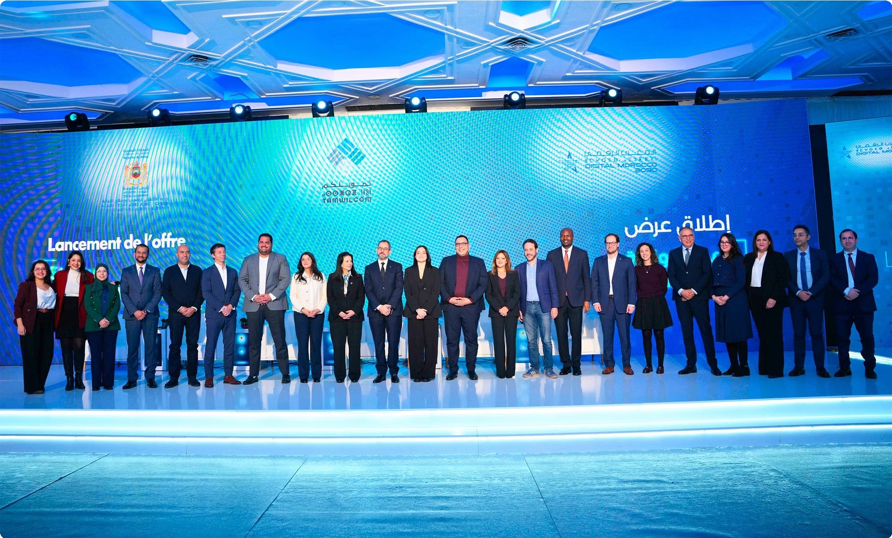
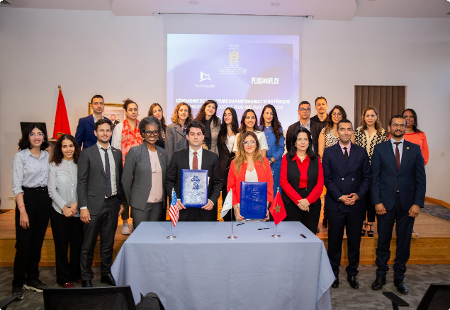
Aligné avec la vision de la stratégie Maroc Digital 2030, le Morocco Accelerator contribue à structurer un nouveau palier d'accompagnement pour les startups, orienté vers l'accélération de la croissance, l'ouverture à l'international et la création d'impacts économiques mesurables, consolidant ainsi le positionnement du Maroc comme hub régional de l'innovation numérique.
En décembre 2025, le Technopark a été sélectionné dans le cadre de l'initiative nationale Startup Venture Building (SVB), une déclinaison opérationnelle de la stratégie Maroc Digital 2030 dédiée au renforcement de l'écosystème des startups. Cette sélection positionne le Technopark comme opérateur pour le déploiement de programmes d'incubation à l'échelle nationale.
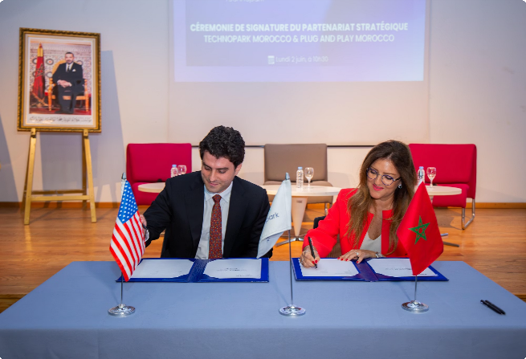
Déployée sur une période de trois ans, l'initiative vise l'accompagnement de 240 startups en phase d'incubation à travers un dispositif structuré fondé sur des processus de sélection rigoureux, un suivi renforcé et un déploiement coordonné à l'échelle nationale. Dans ce cadre, le Technopark contribue à structurer des parcours d'incubation permettant aux porteurs de projets de transformer leurs idées en startups viables, capables de franchir les premières étapes de validation de marché.
Ce programme constitue également un levier majeur de territorialisation de l'accompagnement entrepreneurial, en élargissant l'accès aux dispositifs d'incubation au-delà des principaux pôles urbains, en s'appuyant sur le réseau national du Technopark, et en structurant un pipeline de startups innovantes mieux préparées à accéder au marché, aux compétences clés et aux premiers financements.
Le Technopark enregistre une progression continue du nombre d'entreprises hébergées, illustrant à la fois la dynamique de développement de son réseau et son attractivité croissante auprès des entrepreneurs technologiques. Cette évolution s'inscrit pleinement dans une dynamique de structuration et de maturation de l'écosystème startup marocain à laquelle le Technopark contribue pleinement.
En accueillant un nombre croissant d'entreprises et en maintenant une proportion significative de startups en phase early stage (moins de deux ans d'activité), il contribue à alimenter le pipeline entrepreneurial national, en favorisant l'émergence de startups à fort potentiel et le développement continu de solutions innovantes dans des secteurs stratégiques.
L'évolution des entrées et sorties d'entreprises entre 2021 et 2025 reflète la dynamique du réseau Technopark, caractérisée par une attractivité soutenue et un renouvellement continu du portefeuille d'entreprises. Cette dynamique s'inscrit dans un modèle structuré, où la durée d'hébergement est limitée à cinq ans, favorisant un cycle vertueux de renouvellement et d'optimisation des capacités d'accueil. Elle se traduit également par un niveau d'occupation élevé, avec des taux atteignant 100 % sur les sites de Casablanca, Rabat et Tanger, et une moyenne d'environ 70 % sur les autres sites, témoignant de l'attractivité du dispositif à l'échelle nationale.
En 2025, le réseau enregistre 156 nouvelles entrées contre 134 sorties, confirmant une dynamique positive et un taux de rotation global de 38 %. Ce taux traduit un renouvellement moyen du portefeuille sur un cycle d'environ 3 ans, illustrant un modèle entrepreneurial actif où l'arrivée régulière de nouveaux projets vient enrichir le vivier d'innovation, tandis que les sorties correspondent, pour une part significative, à des trajectoires de maturation, d'extension ou de redéploiement des entreprises.
Plus qu'un simple indicateur de flux, ce taux de rotation illustre la capacité du Technopark à maintenir un équilibre entre renouvellement entrepreneurial et consolidation du portefeuille, tout en accompagnant efficacement la montée en puissance des entreprises résidentes.
La répartition entre entreprises digitales et startups reflète l'équilibre structurant du modèle Technopark. Si les entreprises digitales constituent la majorité du portefeuille, assurant stabilité économique, ancrage marché et création d'emplois, la présence significative de startups traduit la capacité du Technopark à alimenter en continu le vivier d'innovation et à accompagner l'émergence de nouvelles générations d'entrepreneurs technologiques.
Toute entreprise digitale est éligible à l'intégration au Technopark. Toutefois, la distinction entre startups et TPE digitales s'inscrit dans une logique stratégique visant à structurer deux parcours d'accompagnement complémentaires et différenciés. D'une part, un parcours dédié aux startups, résolument orienté vers l'innovation, la validation de marché, l'accélération et la scalabilité. D'autre part, un parcours destiné aux TPE digitales, axé sur la structuration, le développement commercial, la consolidation des modèles économiques et le renforcement des capacités opérationnelles.
Cette différenciation traduit une volonté affirmée du Technopark de promouvoir davantage l'innovation et la scalabilité, en concentrant des dispositifs à forte intensité d'accompagnement sur les projets à fort potentiel de croissance, tout en assurant un socle solide de développement pour les entreprises digitales. Elle permet ainsi d'orchestrer un continuum de croissance, où les startups peuvent évoluer vers des structures plus matures, contribuant à la consolidation d'un tissu technologique national innovant, compétitif et durable.
📌 Entreprise digitale : Une entreprise ou PME digitale est une entreprise qui s'appuie sur les technologies numériques pour créer, délivrer ou commercialiser sa proposition de valeur, souvent à travers des plateformes, des données ou des services en ligne.
🚀 Startup : Jeune entreprise innovante à fort potentiel de croissance, en phase de recherche et de validation de son modèle économique, souvent portée par une technologie disruptive ou une solution à fort impact.
Dans la continuité de cette structuration du portefeuille, l'analyse par stades de maturité des startups met en évidence la fonction de progression portée par le modèle Technopark.
En 2025, la maturité des entreprises résidentes reflète un réseau qui fonctionne comme un véritable parcours de développement entrepreneurial, capable d'accueillir un flux continu de nouvelles structures tout en accompagnant leur évolution vers des stades plus avancés.
Le portefeuille demeure majoritairement composé de startups en phase d'amorçage (Startup-Start) représentant 62%, tandis que 38% évoluent déjà en phase d'accélération (Startup-Accel), traduisant la progression d'une partie des entreprises vers des niveaux de structuration plus avancés.
Cette progression repose sur un dispositif d'accompagnement structuré et complet, traduisant le déploiement de la feuille de route stratégique du Technopark, articulée autour d'une offre intégrée couvrant plusieurs leviers clés : le financement, les opportunités de marché, les réseaux, les talents, la formation et l'innovation.
La diversité des secteurs d'activité représentés au sein du Technopark reflète la richesse de l'écosystème numérique marocain. Cette cartographie offre une lecture globale des domaines d'intervention des entreprises, de leur niveau de maturité ainsi que des leviers susceptibles de soutenir leur croissance.
Le Technopark veille ainsi à maintenir un mix équilibré d'entreprises en termes de secteurs, de taille et de maturité, favorisant la diversité des expertises et constituant un levier essentiel de performance et d'innovation au sein de l'écosystème.
En 2025, la structuration sectorielle et technologique du portefeuille se renforce, en cohérence avec les orientations stratégiques du Technopark. Les critères de sélection, centrés sur le potentiel d'innovation, favorisent l'intégration de startups positionnées sur des technologies de pointe telles que l'intelligence artificielle, le Big Data, l'IoT ou encore le cloud.
Cette orientation permet d'assurer un meilleur alignement entre les solutions développées et les besoins du marché, tout en renforçant l'efficacité des dispositifs d'accompagnement grâce à la mobilisation ciblée de mentors, d'expertises techniques et de ressources spécialisées par segment. Elle contribue également à structurer des dynamiques de collaboration entre startups, en favorisant les synergies sectorielles, le partage de connaissances et l'émergence d'initiatives collectives au sein de l'écosystème.
Entre 2024 et 2025, l'écosystème Technopark connaît une reconfiguration technologique majeure avec un doublement du nombre de startups IA, passant de 119 à 203. Cette accélération est soutenue par l'expansion très marquée des technologies Data — de 54 à 226 projets — qui consolident le socle analytique nécessaire au développement de solutions IA fiables, scalables et fortement orientées vers l'exploitation de données.
L'évolution simultanée de ces deux segments — la Data comme brique d'infrastructure analytique et l'IA comme couche d'intelligence fonctionnelle — traduit une intégration de plus en plus systémique des technologies data-driven dans les modèles économiques des startups.
Cette dynamique confirme l'IA comme brique technologique au cœur des trajectoires d'innovation, et témoigne d'une montée en maturité des solutions développées.
La forte accélération de la Data agit comme catalyseur technique, renforçant la capacité des entreprises à entraîner des modèles plus complexes, à fiabiliser leurs pipelines d'ingestion, et à développer des services plus personnalisés et prédictifs.
À l'international, la tendance est tout aussi marquée : 72 % des organisations utilisent désormais l'IA dans au moins une fonction, et 65 % recourent régulièrement à l'IA générative, indiquant une normalisation rapide des usages et une pression accrue sur les entreprises pour intégrer l'IA dans leurs chaînes de valeur.
Pour le Technopark, cette accélération conjointe Data–IA ouvre des perspectives structurantes :
En 2025, les entreprises du Technopark génèrent un chiffre d'affaires annuel cumulé dépassant 1,2 milliard de dirhams, confirmant leur contribution croissante à la dynamique économique du secteur numérique.
La structure du portefeuille demeure largement composée de très petites entreprises, qui représentent environ 76% de la communauté, avec un chiffre d'affaires annuel généralement inférieur à 1 million de dirhams. (Entreprises ayant majoritairement moins de deux ans d'activité). Toutefois, les segments intermédiaires (1–5 MDH) demeurent représentatifs avec un ensemble d'entreprises en structuration avancée, consolidant progressivement leur modèle économique. Le maintien d'une proportion stable d'entreprises dépassant les 10 MDH de CA confirme l'existence d'un noyau d'acteurs matures, performants et capables de générer une valeur économique significative.
Bien que minoritaire en volume, ce segment constitue un véritable moteur de croissance pour l'écosystème, incarné par plusieurs entreprises devenues des références sectorielles — notamment dans la fintech, les services IT, la logistique digitale ou les solutions cloud. Leur capacité à croître atteste de l'efficacité du modèle d'accompagnement du Technopark, qui facilite l'émergence de trajectoires entrepreneuriales robustes.
Cette configuration illustre un écosystème équilibré entre renouvellement et montée en maturité : d'un côté, un vivier dynamique d'entrepreneurs en phase early stage, soutenu par les dispositifs d'incubation et d'accélération ; de l'autre, des entreprises plus structurées qui franchissent des seuils économiques critiques et renforcent l'attractivité du Technopark auprès des investisseurs et partenaires stratégiques.
| WafR | Fintech / RetailTech | |
| AGENZ | PropTech / Data immobilier | |
| WashMinute | CleanTech | |
| Hsabati | Fintech | |
| Alya Pay | Fintech | |
| MLNetworks | Télécoms | |
| CloudFret | Logistech | |
| Skylark Services | Industrie X.0 | |
| Aishore | IA / HR Tech |
| GREENERTECH | GreenTech / AgriTech | |
| PCS AGRI | AgriTech / Data | |
| BIBORNE MAROC | RetailTech |
| ALKORA | SportTech |
| ARWA SOLUTIONS | AgriTech / Data | |
| Inovadex Consulting | Cybersécurité |
| OPEN SCHOOL PRIVÉ | EdTech | |
| EMSYDEV | Data / IA | |
| COGNERP NORTH AFRICA | Data / IA |
La communauté d'entreprises hébergées au Technopark regroupe un total de 3 662 emplois, dont 1 104 occupés par des femmes, soit près d'un tiers des effectifs. Cette répartition traduit une dynamique encourageante en matière d'intégration des talents féminins au sein de l'écosystème entrepreneurial technologique.
La répartition des entreprises par taille montre que 62 % des structures du Technopark comptent entre 1 et 5 employés, tandis que 22 % disposent de 6 à 10 collaborateurs, et environ 16% dépassent les 20 employés, confirmant un écosystème dominé par des jeunes entreprises technologiques en pleine structuration.
Cette configuration illustre le rôle majeur du Technopark en tant que pourvoyeur d'emplois qualifiés, notamment dans les métiers du digital. En moyenne, une startup hébergée crée 3 à 5 emplois dès sa première année d'activité, portée par un environnement qui facilite l'accès aux compétences tech, l'accélération produit et la mise en marché.
Cette forte concentration d'entreprises early-stage permet au Technopark d'alimenter en continu le marché marocain en profils spécialisés — développeurs, data engineers, experts IA, designers UX, administrateurs cloud et contribue à renforcer la compétitivité technologique nationale, en soutenant la croissance de startups capables d'élargir progressivement leurs équipes et d'ancrer durablement l'emploi numérique au Maroc.
Cette configuration reflète la vocation du Technopark à accompagner l'émergence et la montée en puissance de startups innovantes, tout en favorisant la création d'emplois qualifiés au sein de l'économie numérique.
Dans un contexte national marqué par des enjeux majeurs d'employabilité, notamment chez les jeunes diplômés, la création d'emplois qualifiés constitue un levier stratégique pour accompagner la transformation économique du Maroc. Les startups et entreprises digitales s'imposent, à cet égard, comme des acteurs clés, capables de générer de nouvelles opportunités professionnelles dans les métiers liés aux technologies et à l'économie numérique.
Dans ce cadre, l'écosystème Technopark contribue de manière tangible à la dynamique de création d'emplois. En 2025, les entreprises résidentes ont généré 1 766 opportunités d'emploi, auxquelles s'ajoutent 696 opportunités de stages et d'immersion professionnelle, renforçant ainsi l'insertion des jeunes talents dans les métiers du numérique.
Cette performance s'inscrit dans une trajectoire de croissance soutenue. Entre 2023 et 2025, le nombre d'emplois créés est passé de 900 à 1 766, soit une progression de +96,2 % en deux ans. L'évolution observée se caractérise par une accélération marquée entre 2023 et 2024 (+55,6 %), suivie d'une phase de consolidation en 2025 (+26,1 %), traduisant une montée en maturité progressive de l'écosystème.
Cette dynamique repose notamment sur la structuration du portefeuille d'entreprises, le renforcement des programmes d'incubation et d'accélération, ainsi que sur la mobilisation accrue de financements, permettant aux startups de soutenir leur croissance par le recrutement de talents techniques et opérationnels.
L'analyse de la structure de ces emplois met en évidence une dynamique à dominante pérenne. Les contrats à durée indéterminée représentent 52,7 % des postes, traduisant un niveau croissant de structuration des entreprises et leur capacité à stabiliser des talents qualifiés. Les contrats à durée déterminée (19,1 %) reflètent la nature évolutive et spécifique des activités numériques, accompagnant la montée en charge progressive des équipes. Enfin, la part des stages et autres formes d'intégration (28,2 %) confirme le rôle du Technopark en tant que pipeline de pré-recrutement, favorisant l'insertion professionnelle et la constitution d'un vivier continu de compétences.
Dans une logique d'amélioration continue de la qualité de ses services, le Technopark réalise chaque année une enquête de satisfaction auprès des startups et entreprises résidentes de son réseau. Cette démarche permet d'évaluer la qualité des prestations proposées — qu'il s'agisse de l'accompagnement, de l'hébergement ou des services de proximité — tout en recueillant les attentes et suggestions des entrepreneurs, afin d'adapter en permanence l'offre du Technopark aux besoins évolutifs des entreprises innovantes.
L'enquête de satisfaction de l'année 2025 a enregistré un taux de participation de 96 %, témoignant d'un fort engagement de la communauté entrepreneuriale. Le taux de satisfaction global atteint 95 %, confirmant la pertinence des services déployés et les efforts constants des équipes du Technopark pour améliorer l'expérience des startups et renforcer la qualité de l'accompagnement proposé.
Les résultats enregistrés sont par ailleurs très homogènes à l'échelle des différents sites du réseau :
| Indicateur | 2025 | 2024 | 2023 |
|---|---|---|---|
| Visibilité / Mise en avant — Satisfaction | 85% | 82% | 84% |
| Accès au marché — Nb bénéficiaires | 94 | 78 | 92 |
| Accès au marché — Taux satisfaction | 95% | 97% | 91% |
| Accès au financement — Nb bénéficiaires | 83 | 76 | 99 |
| Accès au financement — Taux satisfaction | 93% | 92% | 86% |
| Impact sur la visibilité | 73% | 70% | 71% |
| Impact sur le réseau | 79% | 76% | 74% |
Depuis 2021, le Technopark a renforcé son dispositif de pilotage de l'accompagnement en mettant en place un système d'évaluation structuré, centré sur les principaux leviers de croissance des startups : l'accès au marché, l'accès au financement et la visibilité. Ce dispositif permet d'apprécier de manière régulière l'efficacité des actions déployées et leur impact concret sur le développement des entreprises accompagnées.
Les indicateurs traduisent la solidité du modèle d'accompagnement du Technopark. Ils confirment notamment la pertinence des actions menées pour faciliter l'intégration des startups dans les réseaux d'affaires, leur connexion aux opportunités de marché et leur accès aux sources de financement.
L'évolution des indicateurs entre 2023 et 2025 confirme la solidité et la progression des dispositifs d'accompagnement du Technopark. Les taux de satisfaction demeurent à un niveau élevé, notamment pour l'accès au marché (95 %) et l'accès au financement (93 %), témoignant de la pertinence des actions déployées.
Le nombre de startups bénéficiant des dispositifs d'accès au marché progresse en 2025, tandis que les indicateurs d'impact sur la visibilité et sur le réseau enregistrent une amélioration continue. Ces résultats traduisent la capacité croissante des startups accompagnées à accéder aux marchés, aux financements et aux réseaux stratégiques, renforçant ainsi leur potentiel de croissance et leur contribution à la dynamique de l'écosystème entrepreneurial.
Le taux de réussite mesure le pourcentage d'entreprises/startups qui maintiennent leur activité après deux ans d'incubation (POC confirmé + première commercialisation).
En 2025, le taux de réussite se maintient à un niveau élevé, atteignant 96 %, confirmant la robustesse du modèle d'accompagnement du Technopark.
Après une progression notable entre 2023 (88 %) et 2024 (98 %), l'année 2025 s'inscrit dans une phase de consolidation, traduisant l'ancrage durable de ce niveau de performance.
Ce niveau, significatif au regard des standards de l'amorçage, reflète la capacité du Technopark à sécuriser les étapes clés du cycle entrepreneurial, notamment la validation du produit, la première commercialisation et la pérennisation de l'activité au-delà des premières années.
En poursuivant le renforcement de ses programmes structurants et de ses dispositifs d'accès au marché et au financement, le Technopark consolide les conditions nécessaires au maintien de cette performance, tout en inscrivant son action dans une logique durable : transformer les idées en entreprises viables et pérennes.
Chaque année, le TECHNOPARK mesure le taux de pérennité des entreprises à 5 ans. Cet indicateur reflète le pourcentage d'entreprises ayant démontré une performance économique solide à la fin de leur parcours au TECHNOPARK. Cette performance est mesurée par quatre sous-indicateurs :
— L'évolution significative du Chiffre d'affaires (local et/ou à l'export)
— La taille de l'équipe permanente
— La qualité des références marché
— Les levées de fonds réalisées
Le taux de pérennité des entreprises incubées progresse de manière significative, passant de 88 % à 94 %. Cette évolution reflète le virage stratégique opéré par le Technopark ces dernières années, avec un accompagnement désormais orienté vers la croissance et la consolidation des entreprises. Au-delà de l'incubation, le Technopark a renforcé ses dispositifs d'accès au marché, de mise en relation avec les grands comptes et d'accès au financement, tout en déployant des programmes structurants d'accélération. Cette approche plus intégrée contribue à mieux préparer les startups aux phases critiques de développement et à renforcer leur capacité à s'inscrire durablement sur le marché.
En 2025, le Technopark Morocco a consolidé son positionnement en tant que plateforme nationale de référence pour l'innovation et l'entrepreneuriat technologique, en déployant les axes clés de sa nouvelle feuille de route stratégique. L'année a été marquée par le lancement et le renforcement de plusieurs programmes d'accompagnement ciblés, couvrant l'idéation, l'incubation, l'accélération et l'internationalisation, et dont la mise en œuvre a été fortement soutenue par le Ministère de la Transition Numérique et de la Réforme de l'Administration (MTNRA), partenaire institutionnel majeur dans le développement de ces dispositifs.
Cette dynamique a permis d'offrir aux startups un continuum de soutien adapté à chaque étape de leur croissance.
Le Technopark a également intensifié ses actions en matière d'accès au financement, en facilitant les connexions avec les investisseurs, les fonds de capital-risque et les dispositifs nationaux, tout en accompagnant les startups dans leur préparation aux levées de fonds. En parallèle, l'accent a été mis sur l'accès au marché, grâce à des missions internationales, des participations à des événements stratégiques et la conclusion de partenariats ouvrant de nouvelles opportunités commerciales.
Enfin, la valorisation des startups a constitué un axe prioritaire, avec une visibilité accrue à l'échelle nationale et internationale, confirmant le rôle du Technopark comme catalyseur de l'innovation et moteur de la compétitivité numérique du Royaume.
Pensés comme un continuum d'accompagnement, les programmes d'accompagnement spécifiques du Technopark s'inscrivent pleinement dans sa stratégie visant à faire émerger une nouvelle génération de startups compétitives, capables de répondre aux enjeux économiques et technologiques actuels. Ils traduisent également la volonté de renforcer l'ancrage du Technopark au sein de l'écosystème entrepreneurial, en facilitant les synergies, l'accès aux ressources et les opportunités de développement, à l'échelle nationale comme internationale.
Le Technopark propose des programmes d'accompagnement complets et personnalisés, structurés autour de trois phases clés, chacune conçue pour répondre aux besoins spécifiques des projets selon leur niveau de maturité : pré-incubation, incubation et accélération.
Placé sous l'égide du Ministère de la Transition Numérique et de la Réforme de l'Administration, le Morocco Accelerator by Technopark & Plug and Play s'impose comme l'un des programmes les plus structurants déployés par le Technopark en 2025. Ce partenariat stratégique avec Plug and Play, acteur mondial de référence dans l'accélération des startups, combine une méthodologie internationale éprouvée, un accès à des mentors de haut niveau et une connexion directe à un réseau d'investisseurs et de corporates de premier plan.
À travers ce programme, le Technopark affirme son ambition de faire franchir un cap aux startups marocaines à fort potentiel, en les préparant à la scalabilité, à la levée de fonds et à l'internationalisation, tout en consolidant le positionnement du Maroc comme hub régional de l'innovation numérique. Quatre cohortes sont prévues selon une feuille de route structurée, permettant un déploiement progressif et un suivi continu des startups sélectionnées.
Enfin, le programme assure une exposition privilégiée aux événements phares et aux acteurs majeurs de l'écosystème, permettant aux startups de rencontrer investisseurs, corporates et experts, et de créer des opportunités de partenariats, de financement et de croissance à l'international. Cette combinaison d'expertise, de pratique et de visibilité contribue à transformer le potentiel des startups en résultats tangibles et en trajectoires de succès durables.
Le programme repose sur une sélection rigoureuse de startups à fort potentiel, évaluées selon plusieurs critères clés, afin de constituer des cohortes homogènes et engagées, capables de tirer le meilleur parti de l'accompagnement proposé. Cette sélection garantit non seulement la qualité des interactions entre participants, mais aussi un impact réel sur la croissance et la scalabilité des startups.
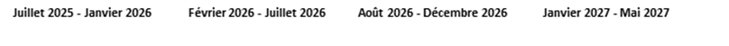
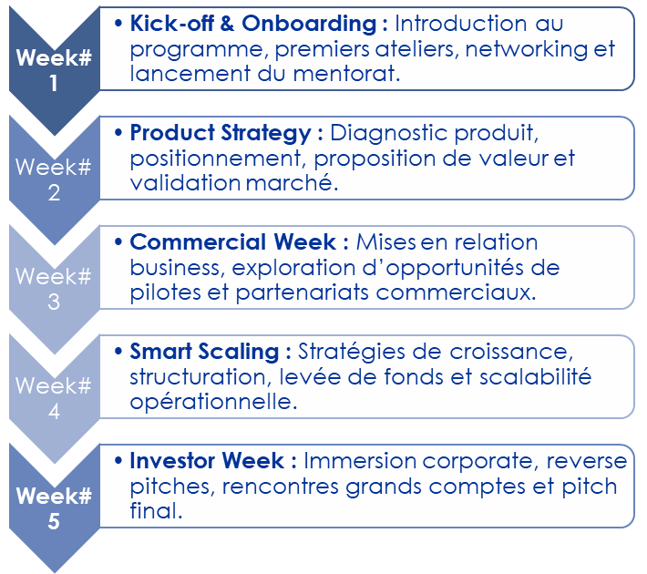
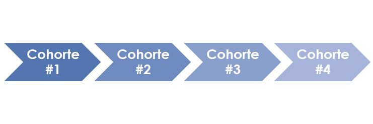
La première cohorte du programme a suscité un fort intérêt, attirant 344 candidatures. Après un processus de sélection rigoureux, incluant 101 entretiens et une présélection de 25 startups, 18 entreprises à fort potentiel ont été retenues. Cette cohorte se distingue par sa diversité, avec 50 % de fondateurs issus de la diaspora et 22 % de leadership féminin, soulignant l'engagement du programme envers l'inclusion et l'excellence. L'intensité de l'accompagnement a été un pilier central, avec 12 ateliers collectifs et plus de 110 sessions individuelles de mentorat dispensées par 11 mentors de haut niveau.
Le programme a également favorisé une forte exposition à l'écosystème international de l'innovation. Plus de 230 réunions avec des investisseurs ont été organisées, mobilisant 20 investisseurs disposant de mandats globaux couvrant les États-Unis, l'Europe, le Moyen-Orient et l'Afrique.
Cette combinaison d'ateliers collectifs, de mentorat individualisé et de connexions directes avec des investisseurs a permis aux startups de structurer leur stratégie de croissance, de renforcer leur préparation à la levée de fonds et d'accélérer leur accès aux marchés internationaux.
Levées de fonds opérées par les startups de la première cohorte : 73 MDH, avec des investisseurs de référence tels que Plug and Play, Antler, Orange Ventures, Newfund Capital et CDG.
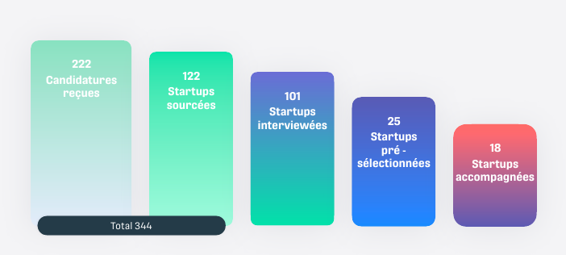
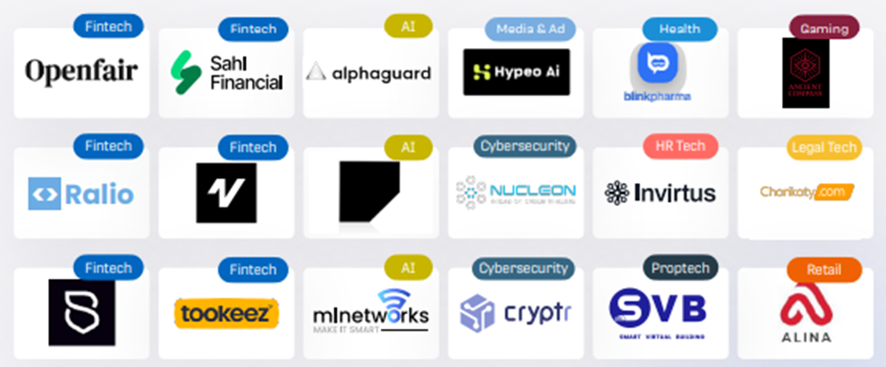
Ces opérations témoignent de la montée en maturité des startups accompagnées et de leur capacité à convaincre des investisseurs de référence, fonds de capital-risque, corporate ventures et réseaux internationaux. La présence d'investisseurs tels que Plug and Play, Antler, Orange Ventures, Newfund Capital et CDG parmi les souscripteurs confirme le rayonnement du programme et son ancrage dans les circuits de financement les plus actifs de l'écosystème tech africain et mondial.
| Startup | Secteur | Montant levé | Investisseurs |
|---|---|---|---|
| Nucleon | Cybersécurité | 30 MDH | Newfund Capital, CDG, LoftyInc Capital Management, Orange Ventures, Axian Group |
| Ralio | Fintech | 19 MDH | SVV, Plug and Play |
| Biasafe AI | Fintech | 9,5 MDH | NC |
| Ancient Compass | Gaming | 3,8 MDH | P1 |
| Sahl Financial | Fintech | 3,3 MDH | NC |
| Charikaty | Legal tech / IA | 2,4 MDH | M Founders |
| AlphaGuard | IA | 1,9 MDH | Antler |
| Hypeo AI | AD tech | 3 MDH | Renew Capital, Madica |
L'accès au financement a été pleinement intégré aux programmes nationaux d'incubation et d'accélération portés par le Technopark, marquant une convergence stratégique entre l'accompagnement entrepreneurial et la facilitation du financement. Ces résultats traduisent une montée en gamme du dispositif, avec une mise en relation qualifiée et une exposition à des investisseurs de premier plan à l'échelle nationale et internationale.
Le programme Morocco Accelerator by Technopark & Plug and Play, initiative phare de l'année 2025, illustre cette approche intégrée avec un dispositif robuste et des résultats probants :
Poursuivant l'élan initié en 2024, le Technopark a déployé en 2025 la deuxième phase du programme DigitAgri, une initiative d'open innovation majeure portée en partenariat avec le Pôle Digital de l'Agriculture, de la Forêt et de l'Observatoire de la Sécheresse, sous l'égide du Ministère de la Transition Numérique et de la Réforme de l'Administration. Ce dispositif connecte l'écosystème technologique aux acteurs agricoles pour catalyser le développement et l'adoption de solutions innovantes.
En favorisant une collaboration étroite entre startups, institutions et industriels, DigitAgri accélère la mise sur le marché de technologies de pointe répondant aux enjeux critiques de productivité, de gestion des ressources, de traçabilité et de durabilité. Le programme s'inscrit pleinement dans les orientations de la stratégie Maroc Digital 2030 et confirme le positionnement du Technopark en tant que catalyseur de l'innovation sectorielle au service de la modernisation de l'agriculture marocaine, tout en jouant un rôle de fédérateur des acteurs régionaux de l'écosystème startups, institutions, partenaires publics et privés, afin de renforcer les dynamiques d'innovation au cœur des territoires.
Dans cette dynamique de co-innovation et de synergies entre acteurs de l'écosystème, le programme DigitAgri s'est appuyé sur un consortium de partenaires stratégiques mobilisant expertises sectorielles, capacités d'expérimentation et leviers de financement :
Dans la continuité de ce dispositif partenarial, le programme DigitAgri a accompagné 10 startups innovantes spécialisées dans l'AgriTech. À ce jour, 5 startups ont déjà déployé leurs solutions au sein de la ferme expérimentale digitale de l'ENAM de Meknès, marquant une étape concrète dans la validation terrain et l'expérimentation de leurs technologies. Parallèlement, 2 autres startups poursuivent actuellement leur phase de prototypage, contribuant au développement et à l'optimisation de solutions adaptées aux enjeux de l'agriculture marocaine.
Au-delà de la phase d'expérimentation, le programme intègre également un dispositif d'accélération et de suivi post-programme, visant à soutenir la croissance et la structuration des startups accompagnées.
À travers ces résultats, le programme DigitAgri réaffirme son rôle de catalyseur de l'innovation agricole au Maroc. La combinaison d'un accompagnement structuré, d'un accès facilité aux infrastructures d'expérimentation, d'un soutien au financement et d'une exposition sur la scène internationale a permis aux startups accompagnées de franchir des étapes déterminantes dans leur développement. Fort de cette dynamique, le Technopark entend poursuivre et amplifier cette initiative dans les prochaines éditions, en élargissant le spectre des filières couvertes et en renforçant les synergies avec les acteurs institutionnels, académiques et industriels du secteur agricole.
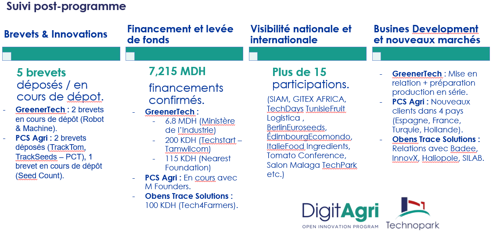
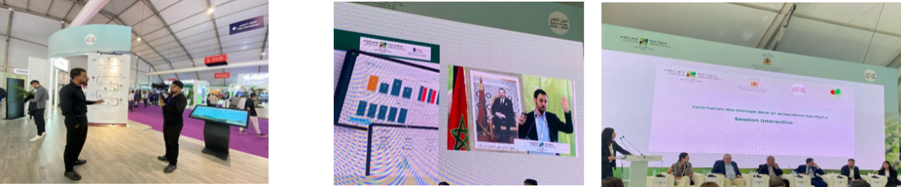
Une image contenant texte, capture d'écran, Police — Description générée automatiquement — À travers ces résultats, le programme DigitAgri réaffirme son rôle de catalyseur de l'innovation agricole au Maroc.
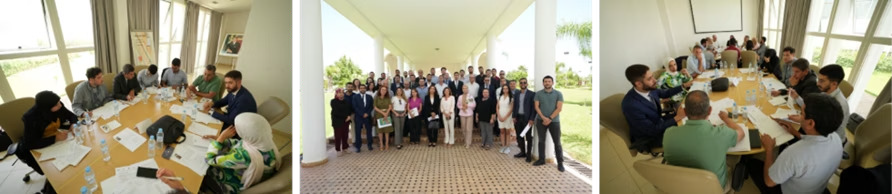
Le programme TIWIZI, lancé par le Technopark Souss Massa avec le soutien de partenaires institutionnels majeurs de la région, s'inscrit dans une dynamique de stimulation de l'entrepreneuriat innovant à l'échelle territoriale. D'une durée de six mois, cette initiative offre aux porteurs de projets une opportunité exceptionnelle de développer des solutions innovantes répondant aux défis contemporains, tout en structurant leur trajectoire de croissance. En favorisant l'émergence de projets à fort potentiel d'impact, TIWIZI s'affirme comme un levier essentiel pour l'innovation et l'entrepreneuriat dans la région Souss Massa.
Soutiens et partenaires stratégiques — Le déploiement du programme TIWIZI repose sur la mobilisation d'un réseau de partenaires institutionnels et privés engagés en faveur du développement de l'écosystème entrepreneurial régional. Ces acteurs apportent leur expertise, leurs ressources et leur ancrage territorial pour garantir un accompagnement de qualité aux porteurs de projets et renforcer les synergies entre les différentes composantes de l'écosystème d'innovation du Souss Massa.
Partenaires stratégiques : Conseil Régional Souss Massa, Ministère de la Transition Numérique et de la Réforme de l'Administration, acteurs académiques et associatifs de la région. Cette collaboration multi-acteurs témoigne de la volonté partagée de créer un environnement favorable à l'innovation, à la création de startups et au développement économique local.
Déroulement du programme : Le programme TIWIZI s'est déployé sur une période de 24 semaines, suivant un parcours progressif et structuré en sept étapes clés, de l'appel à candidatures jusqu'au Demo Day. Chaque phase a été conçue pour accompagner les porteurs de projets dans la maturation de leurs idées, la consolidation de leurs compétences entrepreneuriales et la préparation à la mise sur le marché. Cette approche séquentielle, alternant hackathons, bootcamps intensifs et sessions de pitch, a permis d'assurer un filtrage qualitatif rigoureux des projets tout en renforçant progressivement le niveau de préparation des participants. Lancé en novembre 2024 avec 314 candidatures reçues et 70 projets présélectionnés, le programme a abouti à la sélection de 3 lauréats lors du Demo Day organisé le 5 mai 2025, illustrant ainsi l'exigence et la sélectivité du dispositif au service de l'émergence de startups à fort potentiel.
Cartographie des projets par secteur d'activité — Le programme TIWIZI a accompagné des projets couvrant une diversité de secteurs à fort potentiel d'innovation, en phase avec les dynamiques économiques et les besoins spécifiques de la région Souss Massa. Les projets sélectionnés se répartissent sur plusieurs verticales stratégiques, reflétant la richesse et la variété des initiatives entrepreneuriales portées par les jeunes talents de la région.
Le programme TIWIZI a mobilisé 28 participants porteurs de projets innovants ancrés dans les réalités économiques et sociales de la région. Avec un taux de conversion de 4,54 %, le dispositif a démontré sa capacité à transformer des idées prometteuses en startups structurées. À l'issue du programme, deux projets ont été installés au Technopark Souss Massa, tandis que le projet finaliste Sintrocare a choisi de rejoindre la Cité de l'Innovation Souss Massa, illustrant l'attractivité de l'écosystème régional.
Par ailleurs, plusieurs projets de la promotion ont pu bénéficier d'un accompagnement complémentaire à travers d'autres initiatives de l'écosystème régional et national, grâce aux mises en relation et à la préparation réalisées dans le cadre du programme. Les projets couvrent : E-tourisme, Industries culturelles et créatives, GreenTech, EdTech, AgriTech, Développement informatique et marketing digital.
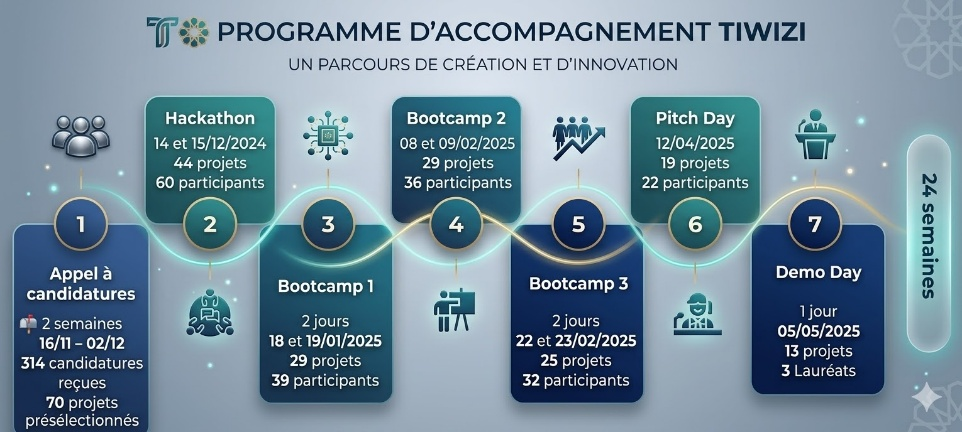
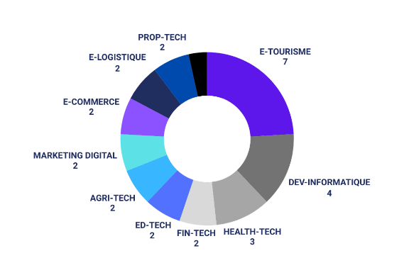
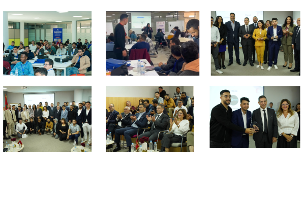
Déployé en 2025 au Technopark Essaouira, le programme Boost Up Lab s'inscrit pleinement dans la stratégie de régionalisation du Technopark et dans sa volonté de faire émerger des dynamiques entrepreneuriales structurées au sein de territoires à fort potentiel, en valorisant les spécificités locales et en réduisant les disparités régionales en matière d'accès à l'innovation.
Conçu pour accompagner des porteurs de projets en phase d'idéation ou de structuration initiale, Boost Up Lab leur offre un cadre méthodologique exigeant, un encadrement de proximité et un accès direct à un réseau d'experts et de partenaires institutionnels clés. Au-delà d'un accompagnement classique, le programme constitue un levier stratégique d'activation de l'écosystème local, favorisant la transformation d'intentions entrepreneuriales en projets viables et formalisés. Le programme s'est déployé sur une période de quatre mois, suivant un parcours d'accompagnement intensif structuré autour de bootcamps pratiques, de sessions de mentorat individualisé, d'ateliers thématiques et de formations ciblées. Cette approche immersive et progressive permet aux participants de consolider leur proposition de valeur, de valider la faisabilité de leur projet, de développer un premier prototype ou MVP, et d'acquérir les fondamentaux de l'entrepreneuriat nécessaires pour structurer leur future startup. Cette première édition essaouirie témoigne de l'ancrage croissant du modèle Technopark dans les territoires et de sa capacité à adapter son offre d'accompagnement aux réalités économiques, sociales et culturelles de chaque région.
Le programme Boost Up Lab Essaouira 2025 a généré des résultats concrets pour l'écosystème entrepreneurial local. Au total, 16 porteurs de projets ont été accompagnés, dont 8 projets lauréats sélectionnés pour leur potentiel d'innovation et leur capacité à répondre aux besoins du marché. Le programme affiche également un taux de satisfaction de 93 %, reflétant la qualité de l'accompagnement et de l'environnement proposé aux participants.
En termes de maturation des projets, 87,9 % des initiatives ont progressé vers un stade avancé avec un MVP prêt au lancement, illustrant l'efficacité du dispositif dans la transformation d'idées en projets opérationnels.
16 porteurs de projets accompagnés sur 4 mois.
8 projets lauréats sélectionnés.
93 % de taux de satisfaction.
87,9 % des projets ont progressé vers un MVP prêt au lancement.
Progression des projets :
• 7 projets sont passés du stade d'idéation au prototypage.
• 1 projet est passé de la première vente à une traction commerciale (1 à 50 ventes).
E-tourisme
Industries culturelles et créatives
GreenTech
EdTech
AgriTech
Développement informatique et marketing digital
Au-delà des résultats quantitatifs, le programme a renforcé les synergies entre entrepreneurs, institutions, acteurs académiques et professionnels du numérique, contribuant à structurer l'écosystème entrepreneurial d'Essaouira. Cette initiative consolide le rôle du Technopark comme catalyseur d'innovation territoriale.
Le programme consolide ainsi le positionnement du Technopark comme acteur de proximité capable de détecter, structurer et faire émerger des talents au plus près des territoires. Fort des résultats encourageants de cette première édition, le Technopark Essaouira prévoit de reconduire et d'enrichir le programme dans ses prochaines éditions, en élargissant son périmètre d'accompagnement et en renforçant les collaborations avec les acteurs locaux et internationaux de l'innovation.
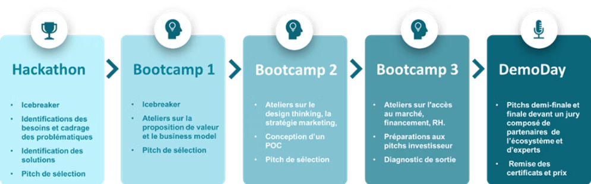
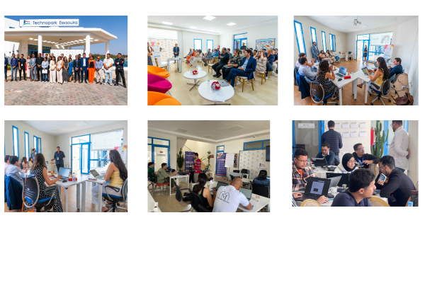
Avec plusieurs startups engagées à l'export, le Technopark confirme la dimension internationale croissante de son écosystème. Cette proportion significative illustre la capacité des startups accompagnées à se projeter au-delà du marché national et à saisir des opportunités à l'échelle globale.
Le Technopark consolide son rôle de passerelle vers les marchés internationaux, en accompagnant des startups de plus en plus nombreuses dans leur développement à l'export. Cette dynamique reflète la capacité des jeunes entreprises marocaines à innover, à s'aligner sur les standards internationaux et à créer de la valeur au-delà des frontières.
Dans la continuité du programme pilote lancé en 2024 auprès d'une première cohorte de 12 startups, le Technopark a déployé une deuxième édition du programme ETAP, confirmant ainsi la pertinence de ce dispositif et la volonté d'inscrire cet accompagnement à l'internationalisation dans la durée.
Seconde Édition (2025-2026) — Après une première édition encourageante, le programme se poursuit avec une deuxième édition lancée en 2025, avec 32 candidatures enregistrées et examinées, dont 29 startups retenues et engagées dans le processus d'accompagnement, participant activement aux différentes actions d'appui et de formation organisées au cours de l'année 2025. Un suivi post-programme est en cours afin de capter et mesurer les retombées positives, notamment en termes d'accès aux marchés internationaux, de partenariats stratégiques et de levées de financement.
Le Export Technopark Accelerator Program (ETAP) constitue un dispositif dédié à la structuration et à l'accélération de l'internationalisation des startups du réseau Technopark. Le programme combine formations spécialisées, mentorat individuel avec des experts nationaux et internationaux, ainsi que des diagnostics approfondis visant à évaluer le potentiel de chaque startup à se positionner sur de nouveaux marchés.
32 candidatures ont été enregistrées et examinées dans le cadre de la deuxième édition du programme ETAP, dont 29 startups ont été retenues et engagées dans le processus d'accompagnement, participant activement aux différentes actions d'appui et de formation organisées au cours de l'année 2025. Un suivi post programme est en cours afin de capter et mesurer les retombées positives post-programme, notamment en termes d'accès aux marchés internationaux, de partenariats stratégiques et de levées de financement. Cette nouvelle cohorte vise à amplifier l'impact du dispositif en renforçant l'accompagnement stratégique, les mises en relation internationales et les opportunités d'accès aux marchés.
À travers le programme ETAP, le Technopark confirme ainsi son engagement à soutenir la montée en compétitivité des startups marocaines et à accompagner leur ouverture vers l'international. En structurant les démarches d'export et en mobilisant un réseau d'experts et de partenaires internationaux, ce programme contribue à positionner les startups marocaines sur de nouveaux marchés et à renforcer leur capacité à se développer à l'échelle globale.
Parmi les startups bénéficiaires 2025/2026 : Elysec International (Cybersécurité), Experts ITN (Réseau & Télécom), Kekeli Academy (Ed Tech), Rhitoric (Ed Tech), Kounhany (Automobile), Indusnov (Industrie 4.0), Zaim Digital (PropTech), Lead Pal (Marketing Digital), Mentor Class Academy (Ed Tech).
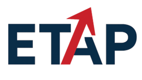
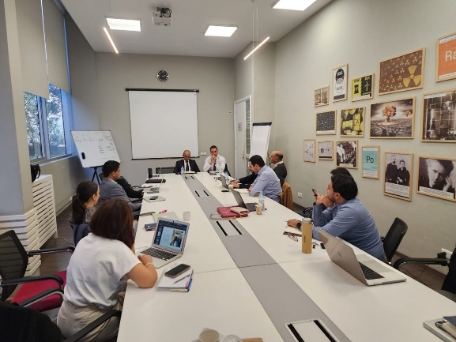
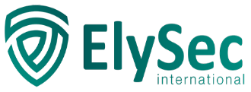
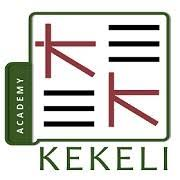
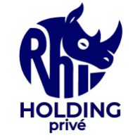
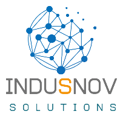
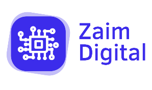
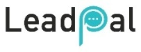
L'initiative nationale Startup Venture Building (SVB) s'inscrit dans la mise en œuvre opérationnelle de la stratégie Maroc Digital 2030, portée par le MTNRA et déployée en partenariat avec TAMWILCOM. Lancé en octobre 2024 à travers la publication de l'Appel à Manifestation d'Intérêt, ce dispositif vise à structurer un cadre national unifié d'accompagnement et de financement des startups, en mobilisant des opérateurs capables de déployer des programmes intensifs sur l'ensemble des phases de développement entrepreneurial.
À l'issue d'un processus de sélection rigoureux, le Technopark a été officiellement désigné en décembre 2025 opérateur national pour le segment incubation, consacrant son rôle d'acteur institutionnel de référence.
Le processus de sélection du dispositif Startup Venture Building (SVB) a reposé sur des critères rigoureux, visant à identifier des opérateurs capables de répondre à des standards élevés d'exécution et d'impact. À cet effet, le processus de sélection a privilégié des acteurs disposant des capacités requises pour répondre aux exigences du dispositif, notamment :
À l'issue de ce processus, Technopark Morocco a été désigné opérateur national pour les segments incubation et accélération. Cette sélection s'appuie sur des atouts différenciants majeurs : une expertise méthodologique reconnue, une forte empreinte territoriale couvrant les principaux pôles d'innovation du Royaume, ainsi qu'une connaissance approfondie des dynamiques locales.
Dans le cadre du programme SVB, Technopark Morocco déploie une offre intégrée couvrant les phases d'incubation et d'accélération, avec une exigence d'exécution homogène à l'échelle nationale. Les programmes seront déployés progressivement courant l'année 2026, en cohérence avec le calendrier opérationnel du dispositif.
L'accompagnement proposé vise à sécuriser les étapes clés du développement des startups, en mobilisant des dispositifs adaptés en matière de structuration, d'accès au marché, de mise en relation avec les partenaires, de montée en compétences, ainsi que d'accès au financement. Ce dernier constitue un levier central du dispositif, à travers l'orientation vers des mécanismes de financement adaptés, la préparation à l'investissement et la facilitation des mises en relation avec les acteurs financiers.
Adoptant une approche opérationnelle et orientée résultats, cette offre permettra de maximiser l'impact du programme SVB et de favoriser l'émergence de startups solides, compétitives et alignées avec les priorités nationales en matière d'innovation et d'entrepreneuriat.
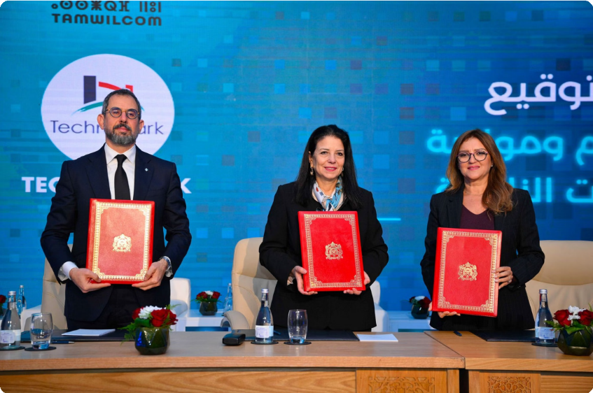
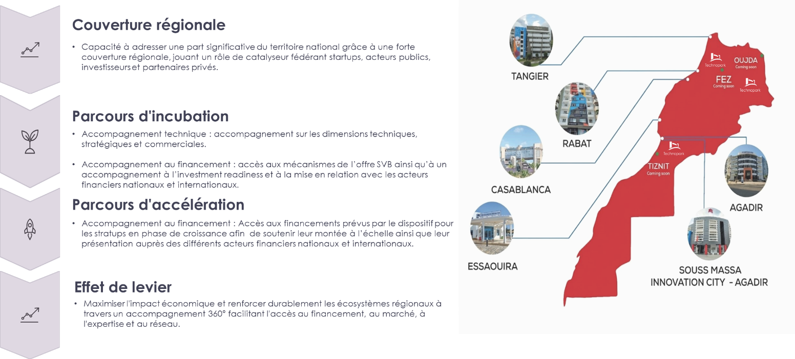
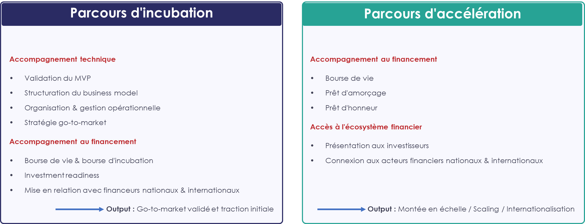
Le financement constitue un levier central de passage à l'échelle pour les startups. Dans cette perspective, le Technopark a structuré en 2025 une approche intégrée couvrant l'ensemble du continuum de la levée de fonds, allant de la préparation en amont jusqu'à la connexion ciblée avec les investisseurs. Cette démarche repose sur un renforcement significatif de la maturité financière des startups, à travers des dispositifs dédiés à la structuration des modèles économiques, à la maîtrise des fondamentaux de la levée de fonds et à la préparation aux exigences du capital-risque.
Parallèlement, le Technopark a consolidé un écosystème de partenaires financiers — fonds d'investissement, institutions, corporate venture — et intensifié l'organisation de formats de mise en relation à forte valeur ajoutée (investor days, sessions de pitching, rencontres qualifiées), déployés à l'échelle de ses différents sites. L'enjeu n'est plus uniquement de faciliter l'accès aux investisseurs, mais de garantir une adéquation optimale entre le niveau de maturité des startups et les attentes du marché.
Cette approche, à la fois sélective et structurante, traduit l'évolution du positionnement du Technopark vers un rôle d'interface stratégique entre startups et investisseurs, contribuant à faire émerger des entreprises capables de mobiliser des financements, d'accélérer leur croissance et de s'inscrire durablement dans des trajectoires de création de valeur.
L'analyse des indicateurs sur plusieurs exercices confirme la montée en maturité du dispositif d'accompagnement à l'accès au financement au sein du Technopark. Cette dynamique s'inscrit dans une stratégie globale visant à positionner le financement comme un accélérateur de croissance, en renforçant la préparation des startups et en optimisant leur mise en relation avec les acteurs financiers.
En 2025, les startups accompagnées au sein de l'écosystème Technopark ont mobilisé un volume significatif de financements à travers trois leviers complémentaires : les levées de fonds (167,5 MDH), les subventions (11,4 MDH) et les prêts d'honneur (3,1 MDH). Les données consolidées font apparaître un total de 183 millions de dirhams mobilisés, confirmant la dynamique de financement croissante observée au cours des dernières années.
Total financements mobilisés : 182,8 millions de dirhams en 2025, confirmant la dynamique de financement croissante observée au cours des dernières années.
Les levées de fonds observées traduisent une structuration progressive de l'écosystème, avec une répartition claire selon les niveaux de maturité. Des opérations structurantes portées par des startups en phase de scale-up, telles que WafR ou AGENZ, témoignent de leur capacité à mobiliser des financements conséquents et à accélérer leur développement. Elles sont complétées par des levées de croissance, illustrées par des startups comme Hsabati ou ALYA PAY, marquant la consolidation des modèles économiques, ainsi que par des financements d'amorçage et intermédiaires, qui soutiennent les premières phases de développement et alimentent un pipeline entrepreneurial dynamique. Sur le plan sectoriel, la fintech s'impose comme le domaine le plus attractif, à la fois par le volume et la récurrence des opérations observées, et par sa présence à l'ensemble des stades de financement.
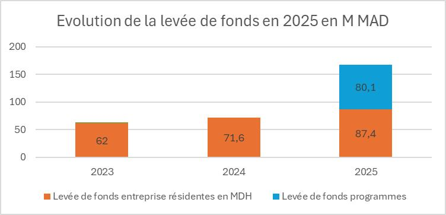
| Startup | Secteur / Technologie | Montant levé (MDH) |
|---|---|---|
| WafR | Fintech | 37,1 |
| AGENZ | Proptech | 29,7 |
| WashMinute | Cleantech | 6,8 |
| Hsabati | Fintech | 5,6 |
| ALYA PAY | Fintech | 3,0 |
| MLNETWORKS | Télécommunications / IA | 2,0 |
| Ta7alil 2.0 | Healthtech | 0,5 |
| GameUp | Gaming | 0,4 |
| Sagidev | Proptech | 0,3 |
| Khabiry Consulting SARL | AI-powered consulting platform | 0,3 |
| Corposup Digital | Marketing digital | 0,2 |
Les subventions représentent un volume global de 13 millions de dirhams, confirmant le rôle structurant des dispositifs publics et des programmes d'innovation dans le soutien aux startups, notamment dans les phases de recherche et développement, de prototypage ou de pré-industrialisation. La startup GreenerTech (Cité de l'Innovation Souss Massa) se distingue particulièrement avec 7,2 millions de dirhams de subventions mobilisées, illustrant l'intérêt stratégique porté à ses solutions technologiques dans le domaine de l'AgriTech et la robotique agricole.
Dans le cadre du programme DigitAgri, GreenerTech a pu mobiliser des financements issus de plusieurs sources complémentaires, illustrant l'efficacité d'un accompagnement intégré combinant soutien public, programmes d'innovation nationaux et appui de fondations privées :
| Source de financement | Montant (MDH) |
|---|---|
| Ministère de l'Industrie et du Commerce | 6,8 |
| Programme Techstart — Tamwilcom | 0,2 |
| Nearest Foundation | 0,2 |
| TOTAL | 7,2 |
Plusieurs autres startups ont également bénéficié de subventions significatives :
| Startup | Site | Secteurs | CA (kDH) |
|---|---|---|---|
| Trac-X | Casablanca | E-tourisme | 300 |
| OBENS TRACE SOLUTIONS | Cité Innovation Souss Massa | AgriTech | 100 |
| L'workshop | Cité Innovation Souss Massa | ICC EdTech | 400 |
| Green Souss Solutions | Cité Innovation Souss Massa | GreenTech | 115 |
| MOGIFY AGENCY | Essaouira | E-tourisme / PropTech | 100 |
| ARWA SOLUTIONS | Rabat | AgriTech | 200 |
| AISHORE MOROCCO | Casablanca | HR Tech | 360 |
| Growmax group | Casablanca | E-commerce | 300 |
| PCS AGRI | Cité Innovation Souss Massa | AgriTech | 800 |
| From Sand to Green - Maroc | Agadir | AgriTech / GreenTech | 750 |
| MEDIA TRIANGLE | Casablanca | Health Tech | 420 |
| DEALKHIR | Casablanca | Fintech | 180 |
| COMPUTATIONAL DESIGN SOLUTIONS | Cité Innovation Souss Massa | Industrie X.0 | 100 |
| RADI ART AGENCY | Essaouira | Marketing Digital | 100 |
| GREENERTECH | Cité Innovation Souss Massa | GreenTech / AgriTech | 7 215 |
| VISIOPROCESS | Casablanca | GreenTech / PropTech | 150 |
| STRATÉGIE TRENTE-DEUX | Essaouira | Marketing Digital | 100 |
| SYGMA.AI | Casablanca | Fintech | 200 |
| CONTACT CENTER DEVELOPMENT SERVICES | Casablanca | ERP | 300 |
| CASHCLICK | Rabat | Fintech | 200 |
| MOGADOR IT | Essaouira | GreenTech | 100 |
| ECOBRIGEC | Cité Innovation Souss Massa | GreenTech | 200 |
| BOVICLOUDS | Cité Innovation Souss Massa | AgriTech | 300 |
| SITELI CW | Cite Innovation Souss Massa | Agri Tech | 30 |
Les prêts d'honneur totalisent 2,2 millions de dirhams, constituant un levier de financement complémentaire destiné à soutenir les startups dans leurs premières phases de structuration ou dans la consolidation de leur modèle économique. Ce dispositif, accessible sans intérêt ni garantie, offre aux entrepreneurs un appui financier précieux pour franchir les étapes critiques de leur développement.
| Startup | Site | Secteur | Montant (kDH) |
|---|---|---|---|
| AIME SOLUTIONS | CI Souss Massa | E-logistique | 500 |
| MARKA SOLUTIONS | Technopark Casablanca | Fintech | 300 |
| CLICK DOC | Technopark Casablanca | Health Tech | 100 |
| KHABIRY CONSULTING SARL | Technopark Casablanca | AI-powered consulting | 500 |
| DEALKHIR | Technopark Casablanca | E-commerce / Fintech | 500 |
| ARTYET | Technopark Essaouira | ICC | 250 |
Le Technopark a renforcé sa dynamique d'accompagnement des startups marocaines en scellant des partenariats structurants avec des fonds d'investissement de premier plan, notamment « Azur Innovation Management » et « Renew Capital ».
Le Technopark a renforcé sa dynamique d'accompagnement des startups marocaines en scellant des partenariats structurants avec des fonds d'investissement de premier plan, notamment « Azur Innovation Management » et « Renew Capital ».
La signature de l'accord avec Azur Innovation Management marque une volonté commune d'accélérer l'émergence de startups à fort potentiel, à travers l'identification de projets éligibles à l'investissement, l'accompagnement dans les levées de fonds et l'accès privilégié au mentorat, aux événements et aux réseaux professionnels du Technopark et d'Azur Innovation Fund.
Le partenariat stratégique avec Renew Capital a consacré l'implantation à Casablanca de son siège régional pour l'Afrique du Nord et de l'Ouest, ouvrant ainsi de nouvelles perspectives de financement, d'expansion continentale et de coopération Sud-Sud. Cette alliance vise à connecter les startups marocaines aux écosystèmes d'innovation panafricains, à faciliter leur accès aux marchés subsahariens et à contribuer à l'émergence de champions régionaux capables de se développer au-delà de leurs marchés d'origine.
Le Technopark a renforcé ses partenariats avec des acteurs majeurs du capital-risque et du capital-innovation afin d'offrir aux startups un accès ciblé à des investisseurs alignés avec leur niveau de maturité. Des sessions one-to-one et des pitchs ont été organisés au sein du réseau. Ces rencontres ont permis aux startups de présenter leurs projets dans un cadre structuré, de confronter leurs modèles aux exigences du marché et de bénéficier de retours directs des investisseurs. Elles ont également contribué à une meilleure compréhension des attentes en matière de traction, de gouvernance et d'indicateurs de performance, tout en permettant aux entrepreneurs d'ajuster leur stratégie financière en conséquence.
Au-delà des levées immédiates, ces sessions jouent un rôle déterminant dans la préparation des startups, en renforçant la qualité des dossiers et en facilitant l'accès à des opportunités de financement futures.
En complément des mises en relation, le Technopark a déployé un programme d'événements pédagogiques visant à renforcer les capacités des startups en matière de levée de fonds. Webinaires, conférences et workshops ont permis d'aborder les fondamentaux du fundraising, depuis la structuration du pitch deck et la modélisation financière jusqu'à la compréhension des étapes clés d'un parcours d'investissement.
Ces initiatives ont contribué à élever le niveau de préparation des startups, en leur fournissant les outils nécessaires pour structurer une démarche cohérente et alignée avec les exigences des investisseurs, y compris à l'international.
En consolidant la préparation des startups et en structurant les connexions avec les investisseurs, le Technopark renforce son positionnement en tant qu'intermédiaire de confiance entre entrepreneurs et financeurs, contribuant à la construction d'un écosystème plus mature, plus crédible et mieux intégré aux circuits de financement nationaux et internationaux, au service de l'émergence de startups à fort potentiel de croissance.
L'accès au financement a été pleinement intégré aux programmes nationaux d'incubation et d'accélération portés par le Technopark, marquant une convergence stratégique entre l'accompagnement entrepreneurial et la facilitation du financement.
Le programme DigitAgri, dédié à l'innovation technologique appliquée au secteur agricole, illustre la capacité des dispositifs d'accompagnement du Technopark à faciliter l'accès aux financements publics et aux mécanismes de soutien à l'innovation. Ce programme contribue à la structuration d'un écosystème agro-digital compétitif, en permettant aux startups accompagnées de mobiliser des ressources adaptées aux différentes phases de développement — de la recherche au prototypage, jusqu'à la pré-industrialisation. Dans ce cadre, la startup GreenerTech a pu mobiliser plus de 7,2 millions de dirhams de financements, confirmant l'efficacité de ce dispositif dans l'accès aux instruments publics de soutien à l'innovation.
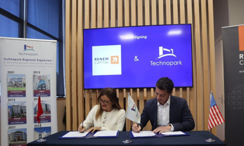
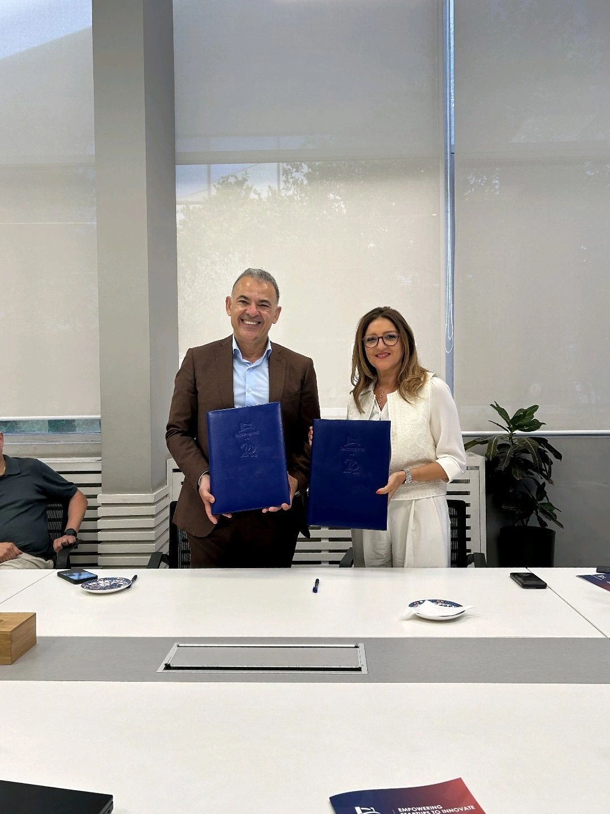
Le renforcement de l'accès au marché et de la valorisation des startups auprès des donneurs d'ordre constitue un axe structurant de la nouvelle stratégie du Technopark. Cette orientation vise à positionner le marché comme un véritable levier de croissance, en accompagnant les startups dans leur capacité à se positionner, à convaincre et à s'inscrire durablement dans des dynamiques commerciales, tant au niveau national qu'international, à travers :
Le Technopark a consolidé, à l'échelle de son réseau, un dispositif structuré de mises en relation qualifiées, ayant permis de générer plus de 150 mises en relation entre startups et acteurs clés du marché (entreprises, institutions et partenaires technologiques). Ces interactions, ciblées et orientées business, s'inscrivent dans une logique d'activation d'opportunités concrètes et de réduction du cycle d'accès au marché. Elles ont permis aux startups de franchir des étapes commerciales déterminantes, notamment à travers l'obtention de bons de commande, la signature de premiers contrats, le lancement de collaborations opérationnelles et l'intégration dans des chaînes de valeur sectorielles.
En 2025, ce dispositif a bénéficié à près d'une centaine de startups, avec des collaborations concluantes, traduisant une efficacité opérationnelle élevée. Le taux de satisfaction de 95 % exprimé par les startups confirme la pertinence du ciblage des mises en relation ainsi que leur adéquation avec les besoins réels du marché. Au-delà des résultats immédiats, ces performances illustrent la capacité du Technopark à jouer un rôle d'intermédiation économique à forte valeur ajoutée, en connectant efficacement l'offre des startups à une demande qualifiée et en transformant ces interactions en leviers durables de développement commercial.
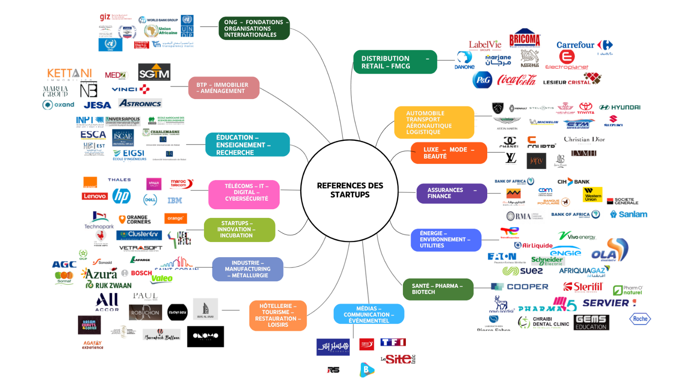
En 2025, le Technopark a engagé un travail structuré de cartographie et de qualification des références clients des startups accompagnées, dans une logique de valorisation des réalisations concrètes et de renforcement de leur visibilité auprès des donneurs d'ordre. Cette démarche permet de disposer d'une vision consolidée et sectorielle des cas d'usage déployés, et de mieux positionner les startups en fonction de leur maturité et de leurs références marché.
Cette cartographie met en évidence un constat stratégique majeur : les startups du Technopark démontrent une capacité avérée à déployer leurs solutions auprès de grands comptes et d'institutions, dans des secteurs variés tels que la finance, l'industrie, l'énergie, la santé, l'éducation ou encore le retail. La diversité et la qualité des références recensées traduisent une confiance marché tangible, et confirment la fiabilité des solutions développées ainsi que leur aptitude à répondre à des besoins métiers complexes, y compris dans des environnements exigeants et réglementés.
À travers cette démarche, le Technopark consolide son rôle de tiers de confiance et d'orchestrateur de l'écosystème, en connectant des startups crédibles et opérationnelles avec des acteurs économiques de premier plan, et en accélérant leur déploiement à plus grande échelle.
Le partenariat entre le Technopark et l'AUSIM s'inscrit comme un axe structurant pour rapprocher l'offre des startups des besoins des grandes entreprises, en faisant de l'innovation un levier concret de transformation et d'intégration économique. À travers le Club Startup-AUSMOSE, les deux institutions ont mis en place un cadre de collaboration structuré, avec des rencontres organisées chaque trimestre, articulées autour de secteurs et technologies précises (IA, Data, Cybersécurité, ...). Cette approche thématique et orientée métiers mobilise décideurs IT, experts et startups autour de problématiques opérationnelles, favorisant des interactions qualifiées et directement alignées avec les besoins des entreprises.
Ce dispositif a permis de générer des opportunités business concrètes, en facilitant l'identification de cas d'usage, la mise en relation avec des donneurs d'ordre et l'émergence de collaborations, du POC à des déploiements plus larges.
| Session | Thématique | Startups participantes |
|---|---|---|
| Février 2025 | Intelligence Artificielle | System and Data Driven, Humantal Maroc, ID&A Tech, May June Solutions |
| Juin 2025 | Cybersécurité | ISSROAD Consulting, BTrust Advisory & Technology, Elysec International |
| Septembre 2025 | Industrie X.0 | Indusnov Solutions, IS-Tech |
| Décembre 2025 | UX/UI | VR Boost Agency, GZAM, KubicBits, Yan Africa |
En 2025, le Technopark a franchi un cap dans sa stratégie d'internationalisation en renforçant l'accompagnement des startups vers les marchés globaux et en amplifiant leur visibilité à l'échelle internationale. À travers des programmes structurés et des partenariats stratégiques, il facilite l'accès à des écosystèmes clés, favorise les connexions business et accélère le déploiement des solutions marocaines au-delà des frontières.
Cette dynamique repose sur une approche opérationnelle combinant exposition internationale, mises en relation qualifiées et accompagnement stratégique, permettant aux startups de tester leurs solutions, d'adapter leur positionnement et de s'inscrire durablement sur des marchés compétitifs. L'internationalisation des startups constitue un levier stratégique au service du développement et de la compétitivité de l'écosystème entrepreneurial marocain, en ligne avec les orientations de la stratégie Maroc Digital 2030.
En 2025, Technopark Morocco a poursuivi le renforcement de son dispositif d'accompagnement des startups et de leur visibilité à l'international. Grâce à des programmes à fort impact et à des partenariats stratégiques, Technopark Morocco facilite l'accès aux marchés mondiaux, mobilise une expertise de haut niveau et soutient la croissance des startups innovantes, consolidant ainsi son rôle clé dans le rayonnement de l'entrepreneuriat technologique marocain à l'international.
Parmi ces initiatives, le programme Glovo Startup Lab constitue une opportunité structurante permettant aux startups marocaines d'accéder à un environnement d'innovation international, de bénéficier de l'expertise de leaders du secteur et de renforcer leurs perspectives de croissance sur les marchés globaux.
Trois startups du Technopark — Artizal (Retail Tech), Black Service Solutions (E-logistique) et Obens Trace Solutions (Agri Tech) — ont bénéficié d'une immersion à Barcelone. Les startups ont échangé avec plus de 20 dirigeants de Glovo, dont des VP et directeurs, autour de thématiques telles que la stratégie, la croissance internationale, le marketing et le développement produit. Le programme a également inclus des visites de hubs comme Preply, Norrsken, Eurecat, TechBCN et Esade, ainsi que des ateliers avec Impact Hub Barcelona dédiés à l'entrepreneuriat à impact. Une session de pitch devant des investisseurs en capital-risque a permis aux startups de renforcer leurs capacités de présentation et d'explorer des opportunités concrètes de financement, tout en développant des connexions durables avec l'écosystème international.
En 2025, Lab Innova by ITA, programme dédié à l'internationalisation des startups marocaines innovantes, a été mis en œuvre dans le cadre du plan Made in Italy en partenariat avec Technopark Morocco, l'ADD et l'UM6P. Le programme a accompagné 22 startups à fort potentiel de croissance internationale à travers un parcours combinant formation technico-managériale, coaching individuel par des experts internationaux et immersion dans l'écosystème italien. Les participants ont bénéficié de sessions stratégiques sur le développement international, le go-to-market, le capital-risque, les alliances stratégiques ainsi que sur des thématiques clés telles que la propriété intellectuelle et les technologies prioritaires. Une study tour en Italie, incluant la participation à Ecomondo (Rimini Fiera), a permis à une sélection de startups de renforcer leurs connexions avec l'écosystème d'innovation italien et d'explorer des opportunités de collaboration technologique et de développement à l'international. Parmi les startups du réseau Technopark Morocco ayant pris part au programme figurent Obens Trace Solutions (Agritech), PCS Agri (Agritech), Logistiqa (E-logistique), SVB DEV (Proptech), GreenerTech (Agritech — greentech), Bovi Clouds (Agritech) et Lombrisol (Greentech), avec des niveaux de satisfaction atteignant plus de 90 %.
Dans le cadre de ses initiatives d'ouverture à l'international, deux startups du réseau Technopark Morocco, Schoolify (Edtech) et SVB Dev (Proptech), ont été sélectionnées pour participer au programme Global Innovation Link organisé par le Qatar Science & Technology Park (QSTP). À travers un accompagnement sur mesure incluant coaching expert, mentorat international et sessions de networking ciblé, les deux startups ont pu renforcer leur stratégie de croissance, valider leur modèle d'affaires à l'échelle internationale et établir des connexions avec des acteurs clés de l'écosystème global, consolidant ainsi leur potentiel de développement sur les marchés de la région MENA.
Poursuivant sa stratégie d'ouverture à l'international, deux startups du réseau Technopark Morocco, Meriva (Healthtech) et Tech InHand (Industrie X.0 – ICC), ont intégré le programme Provence Africa Softlanding, un dispositif dédié à l'accompagnement des startups africaines à fort potentiel dans leur expansion vers les marchés européens. À travers des ateliers stratégiques, des sessions de mentorat et des rencontres avec des acteurs clés de l'écosystème entrepreneurial, les deux startups ont pu affiner leur stratégie de développement international, renforcer leur proposition de valeur et explorer des opportunités de partenariats et d'investissement. Cette immersion leur a permis d'accéder à des réseaux d'affaires européens et africains, favorisant leur positionnement sur des marchés à forte valeur ajoutée et contribuant à accélérer leur trajectoire d'internationalisation.
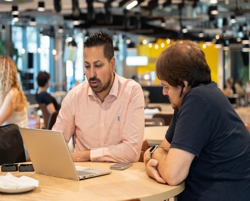
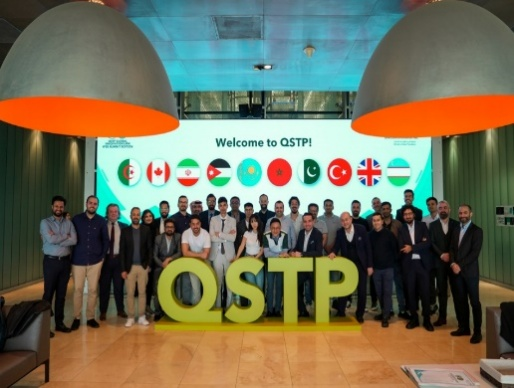
GITEX Africa, tenu à Marrakech en avril 2025, confirme son positionnement comme le plus grand événement technologique du continent, avec plus de 45 000 participants, près de 1 500 exposants et plus de 800 startups issues de plus de 130 pays. Cette dynamique illustre la montée en puissance de l'écosystème digital africain et renforce le positionnement du Maroc comme hub technologique régional, en ligne avec les ambitions de transformation numérique portées au niveau national.
Dans ce cadre, l'initiative GITEX Startup 200, soutenue par le Ministère de la Transition Numérique et de la Réforme de l'Administration (MTNRA), a constitué une opportunité majeure pour les startups marocaines, en leur offrant une visibilité renforcée, un accès privilégié à des investisseurs et partenaires internationaux, ainsi qu'une plateforme de projection vers les marchés globaux. Pour le Technopark, cette édition a représenté une vitrine stratégique pour valoriser les solutions de ses startups, tout en agissant comme un accélérateur de connexions business et de partenariats internationaux. La participation à GITEX Africa a ainsi permis de multiplier les interactions qualifiées, de générer des opportunités concrètes et de renforcer l'intégration des startups marocaines dans des dynamiques d'innovation à l'échelle internationale.
La participation du Technopark au GITEX Africa 2025 s'est traduite par une mobilisation remarquable de son écosystème entrepreneurial. Au total, 50 startups issues du réseau Technopark ont exposé leurs produits et solutions, illustrant la vitalité et la diversité de l'innovation marocaine. Leur présence s'est articulée autour de plusieurs dispositifs, offrant à chacune des opportunités ciblées de visibilité, de réseautage et de développement.
Les 40 startups sélectionnées dans le GITEX Africa Morocco 200 bénéficiaient d'une subvention de 95 % du coût global du stand, de l'opportunité de participer au Supernova Challenge (prix de 100 000 $), ainsi que de rencontres avec des investisseurs et fonds actifs en Afrique. 10 startups étaient présentes via des partenaires ou incubateurs nationaux et internationaux, et 4 startups ont acquis leur propre stand sur le salon.
À l'occasion de GITEX Africa 2025, le Technopark a renforcé son positionnement en tant que plateforme de connexion entre l'écosystème national et les réseaux d'innovation. Cette dynamique s'est traduite par la signature de plusieurs accords institutionnels structurants visant à enrichir les dispositifs d'accompagnement, à faciliter l'accès aux marchés et à accélérer le développement des startups : signature d'un partenariat avec l'ADD (accès aux programmes nationaux d'innovation et aux plateformes digitales / promotion du statut JEI), avec Concentrix (stimuler l'entrepreneuriat et l'innovation / synergies entre le Tek Lab de Concentrix et le réseau Technopark), avec l'APEBI (montée en compétences et accès aux opportunités marché et de financement) et avec l'ANAPEC (accès aux talents qualifiés et soutien à l'insertion professionnelle). Ces initiatives s'inscrivent dans une logique d'ouverture, de collaboration et de création de valeur au service de l'écosystème entrepreneurial marocain.
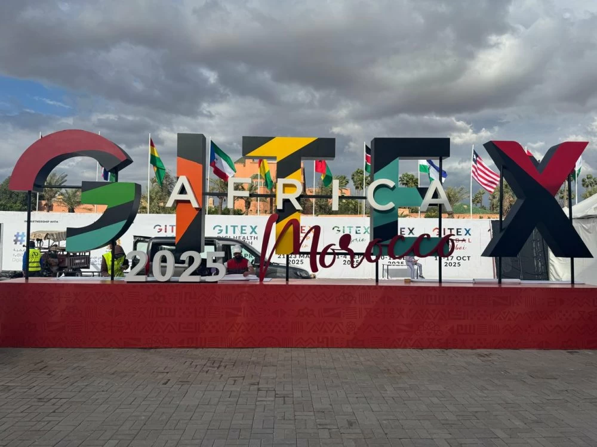
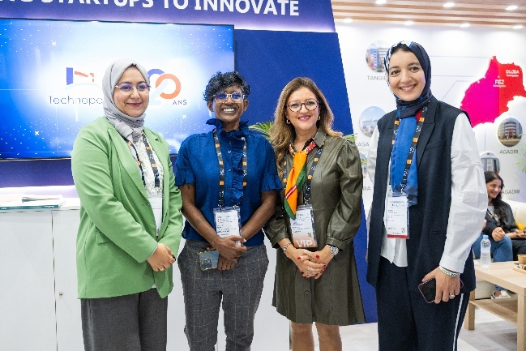
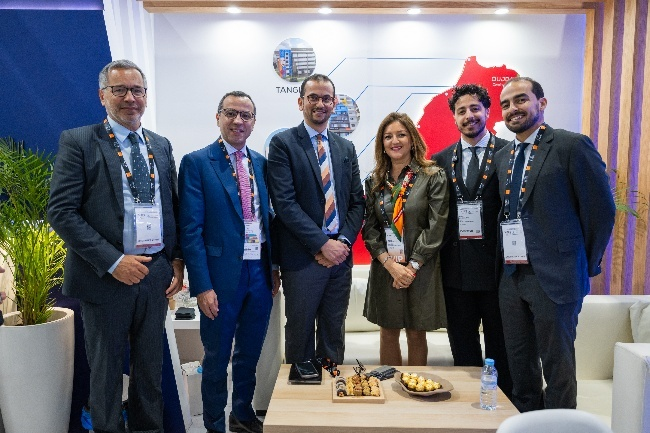
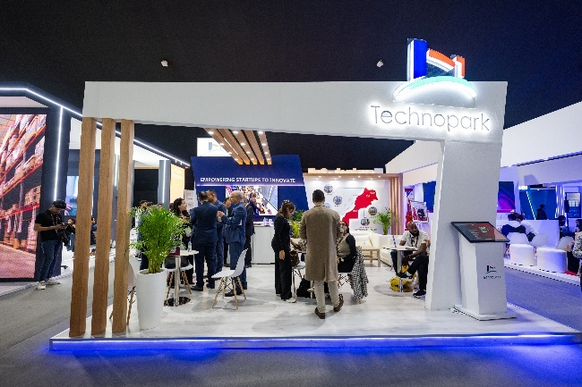
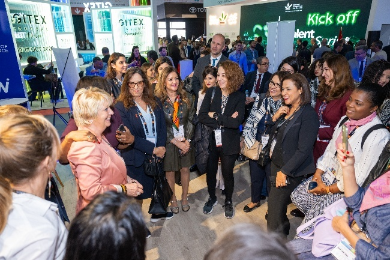
Sous l'impulsion du Ministère de la Transition Numérique et de la Réforme de l'Administration (MTNRA), le Maroc a pris part à VivaTech 2025 à Paris à travers une délégation composée de startups innovantes et d'acteurs clés de l'écosystème numérique national, affirmant ainsi le positionnement du digital marocain sur la scène internationale.
Dans ce cadre, Technopark a contribué à renforcer la visibilité internationale de trois startups de son réseau — ISSROAD, SVB DEV et MX4AI — en facilitant leur participation à VivaTech, l'un des événements mondiaux de référence en matière d'innovation et de technologie. ISSROAD a ainsi exposé au sein de la cohorte ministérielle, bénéficiant d'une vitrine stratégique et d'un accès privilégié à des décideurs internationaux, investisseurs et partenaires de premier plan. De leur côté, SVB DEV et MX4AI ont participé à l'événement en tant que visiteurs, profitant d'opportunités de networking ciblé, de rencontres qualifiées et d'échanges avec les principaux acteurs de l'écosystème tech international.
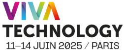
Dans le cadre du partenariat signé entre Technopark et Koun International, le Technopark et 5 startups de son réseau ont été sélectionnées pour bénéficier à titre gracieux d'une participation à la première édition du GITEX EUROPE à Berlin. Des secteurs diversifiés ont été représentés à cette manifestation tels que l'Industrie X.0, l'IA, la FinTech et la e-logistique. Les startups du Technopark ont bénéficié d'une vitrine européenne pour valoriser l'innovation nationale, stimuler les partenariats et accélérer l'internationalisation des entrepreneurs marocains.
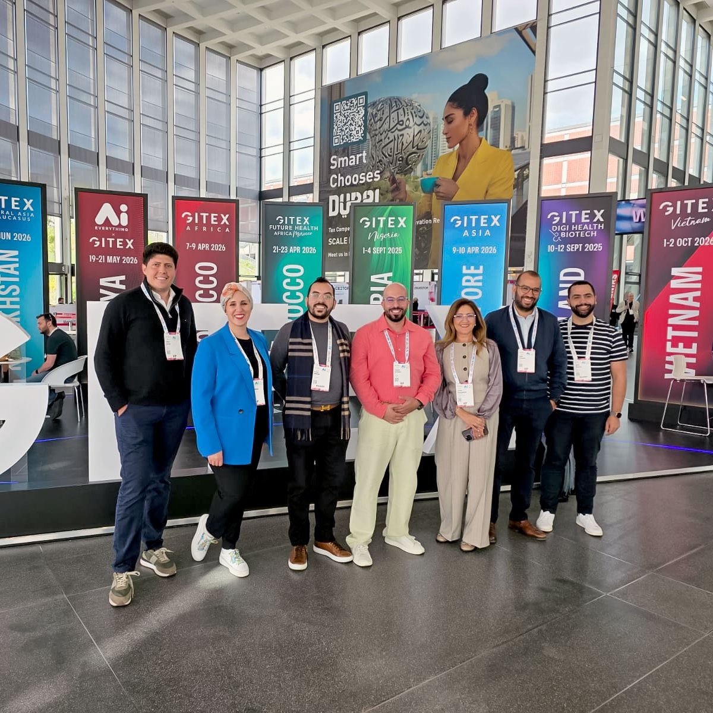
En novembre 2025, Technopark Morocco a pris part à la deuxième édition d'Emerging Valley, un événement international qui favorise les connexions entre les écosystèmes d'innovation européens et africains et offre aux startups un accès privilégié à des experts, investisseurs et acteurs clés de ces écosystèmes. Lors de l'édition 2025, organisée à Aix-Marseille-Provence, la délégation marocaine, incluant l'UM6P, a mis en lumière plusieurs startups innovantes, tout en développant des contacts stratégiques et en explorant des dispositifs de soft-landing favorisant leur expansion internationale. Cette participation a contribué à renforcer la visibilité des startups marocaines.
Le programme de la délégation a inclus des présentations de projets au sein de Marseille Innovation, des sessions de networking au Palais du Pharo, ainsi que la participation à des panels, ateliers et rencontres B2B au cœur d'EMERGING Valley. Ces moments ont permis aux startups marocaines de renforcer leurs connexions avec des investisseurs, incubateurs, institutions et acteurs de l'innovation des deux rives.
Une diversité et complémentarité des secteurs technologiques ont été représentés à cette édition, couvrant notamment l'intelligence artificielle, l'Internet des objets (IoT), la fintech, la cybersécurité, le cloud computing, la healthtech, les solutions data-driven, l'e-logistique, les technologies appliquées à l'automobile ainsi que les industries culturelles et créatives. Cette pluralité témoigne du dynamisme de l'écosystème entrepreneurial marocain et de sa capacité à développer des solutions innovantes répondant aux enjeux de la transformation digitale à l'échelle nationale et internationale.
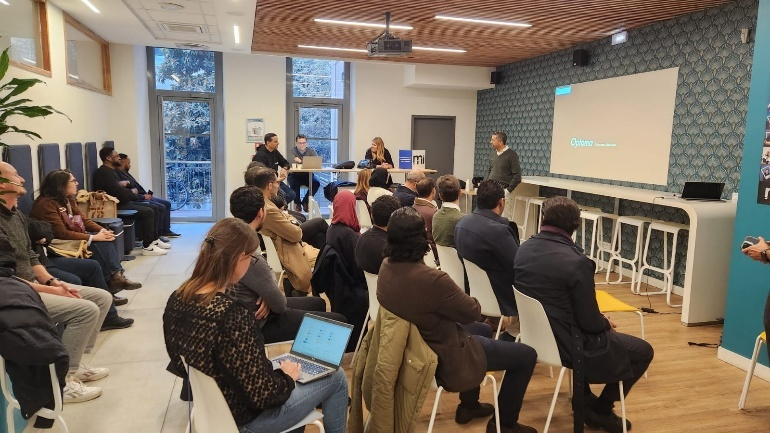
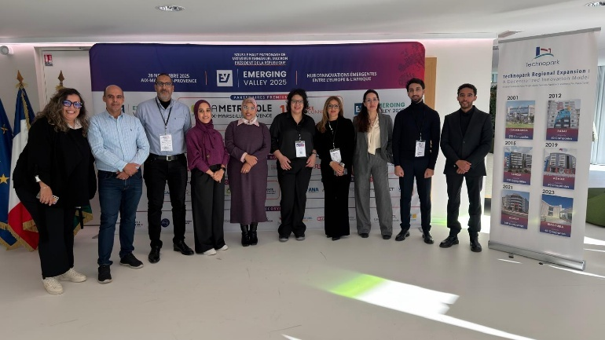
L'analyse des performances à l'export au sein du réseau Technopark met en évidence une dynamique d'internationalisation structurée et durable, traduisant la capacité croissante des startups à se positionner sur des marchés internationaux compétitifs. L'accès à ces marchés constitue désormais un axe stratégique de développement, contribuant de manière significative à la génération de chiffre d'affaires et à la diversification des débouchés.
Cette dynamique repose sur un accompagnement ciblé du Technopark, visant à préparer les startups à l'internationalisation (programmes d'export et de soft landing), à faciliter leur mise en relation avec des partenaires étrangers et à soutenir leur intégration dans des écosystèmes globaux (partenariats avec des accélérateurs internationaux). Elle se traduit par une présence de plus en plus importante des startups sur des marchés variés, ainsi que par leur capacité à répondre à des standards internationaux en matière de qualité, d'innovation et de compétitivité.
Au-delà des performances économiques, cette ouverture internationale renforce la maturité des startups, accélère leur montée en gamme et favorise leur intégration dans des chaînes de valeur globales. Elle contribue également au rayonnement du savoir-faire technologique marocain, positionnant les startups du Technopark comme des acteurs crédibles sur la scène internationale.
En 2025, les résultats confirment une dynamique d'internationalisation structurée et durable. 32 startups ont déclaré disposer d'une implantation effective à l'international, illustrant une stratégie d'expansion structurée vers des marchés à fort potentiel. Par ailleurs, 35 % des startups accompagnées — soit 128 entreprises — exportent leurs solutions vers l'international, avec une présence répartie sur six grandes régions économiques. Cette ouverture internationale se traduit par un chiffre d'affaires consolidé à l'export de 200 millions de dirhams en 2025, confirmant l'importance croissante des marchés extérieurs dans la croissance des startups du réseau Technopark.
L'analyse de la répartition géographique des exportations révèle plusieurs tendances structurantes.
L'Europe demeure la principale zone d'exportation, avec une forte concentration en France, qui joue historiquement un rôle de porte d'entrée pour les entreprises marocaines. Toutefois, une diversification progressive s'observe vers d'autres marchés européens tels que l'Allemagne, la Belgique, le Royaume-Uni et la Suisse, traduisant une stratégie d'expansion plus mature et diversifiée.
L'Afrique représente également un axe stratégique majeur, notamment en Afrique de l'Ouest, où les startups marocaines trouvent des marchés proches culturellement et économiquement, favorables au déploiement de solutions technologiques adaptées aux besoins régionaux. Cette présence renforce le rôle du Maroc comme hub d'innovation et de technologie entre l'Europe et l'Afrique.
La région MENA constitue un autre levier important d'internationalisation, avec des marchés à forte valeur ajoutée tels que les Émirats arabes unis et l'Arabie saoudite, qui offrent des opportunités significatives dans des domaines comme la transformation digitale, l'intelligence artificielle et les services numériques. Enfin, la présence de startups marocaines sur des marchés plus éloignés, notamment en Amérique, en Asie et en Océanie, témoigne d'une capacité croissante à intégrer des chaînes de valeur globales et à adresser des clients internationaux dans des secteurs technologiques avancés.
L'export au sein du réseau Technopark se distingue par sa forte orientation vers les services numériques à haute valeur ajoutée, notamment dans des domaines tels que la cybersécurité, l'intelligence artificielle, la healthtech et les solutions data-driven. Les modèles économiques basés sur le SaaS, les plateformes digitales et les services IT facilitent cette internationalisation en réduisant les contraintes logistiques et en permettant une scalabilité rapide des solutions.
Les pays et zones d'exportation couvrent un large éventail géographique, témoignant de la portée mondiale du réseau Technopark.
Le Technopark place le capital humain au cœur de son dispositif d'accompagnement à travers deux leviers complémentaires : la facilitation de l'accès des startups à des talents technologiques qualifiés, et le renforcement des compétences des fondateurs et de leurs équipes.
L'accès à des ressources humaines qualifiées constitue un pilier central de l'accompagnement proposé par le Technopark. Les Job Fairs s'imposent comme des rendez-vous incontournables, organisés en partenariat avec les institutions académiques et au sein même du réseau Technopark, afin de favoriser la mise en relation entre talents et entreprises innovantes.
Chez les partenaires académiques : Les collaborations avec les écoles et universités partenaires jouent un rôle déterminant dans la création d'un écosystème propice à l'innovation. Les Job Fairs organisés en tandem avec ces institutions offrent une plateforme unique où les startups du Technopark peuvent interagir directement avec des lauréats talentueux. Ces événements facilitent la rencontre entre les aspirations professionnelles des jeunes talents et les besoins en compétences des startups en pleine croissance.
Au sein du réseau Technopark : Les rencontres professionnelles organisées au Technopark mettent en relation les startups florissantes avec des profils variés, allant des experts en technologie aux spécialistes du marketing et du management. Les startups ont ainsi l'opportunité d'identifier et de recruter les talents nécessaires pour renforcer leurs équipes, en un temps considérablement réduit. Ces initiatives traduisent l'engagement constant du Technopark à rapprocher les jeunes talents prometteurs des startups innovantes, en renforçant les synergies entre le monde académique et l'univers entrepreneurial.
| Site / Événement | Date | Participants | Startups |
|---|---|---|---|
| Casablanca — Job Fair ALX | 04/12 | 40 candidats | 25 |
| Casablanca — ARK-X x Jobintech | 16/12 | 200 participants | 30 |
| Tanger — Job Fairs (2 éditions) | S2 2025 | 96 candidats | 20 |
| Souss Massa — Job Fairs (2 éditions) | Juin & Déc. | 275 chercheurs | 18 |
Le Technopark Souss Massa a organisé deux Job Fairs en juin et décembre 2025, mobilisant 275 chercheurs d'emploi et 18 startups participantes, contribuant à connecter les talents régionaux aux besoins des entreprises innovantes.
JobInTech, programme national dédié au renforcement de l'employabilité dans les métiers du numérique, ambitionne de former et requalifier des talents en phase avec les besoins de l'économie digitale. Il s'inscrit dans une dynamique de développement des compétences, en mettant l'accent sur des parcours de reskilling et d'upskilling orientés vers les métiers du numérique. Le déploiement du programme JOB IN TECH au Technopark s'inscrit dans une dynamique nationale visant à renforcer l'employabilité des jeunes talents du numérique et à connecter efficacement compétences IT et besoins des entreprises. À travers les différents événements organisés au sein du Technopark, le programme a joué un rôle structurant dans l'insertion des lauréats au sein de l'écosystème startups, renforçant ainsi les passerelles entre formation, insertion professionnelle et transformation digitale. L'implication active du Technopark, associée à la mobilisation d'opérateurs spécialisés et de partenaires institutionnels, a permis d'offrir un cadre propice à l'identification, la valorisation et l'intégration des profils technologiques auprès des startups.
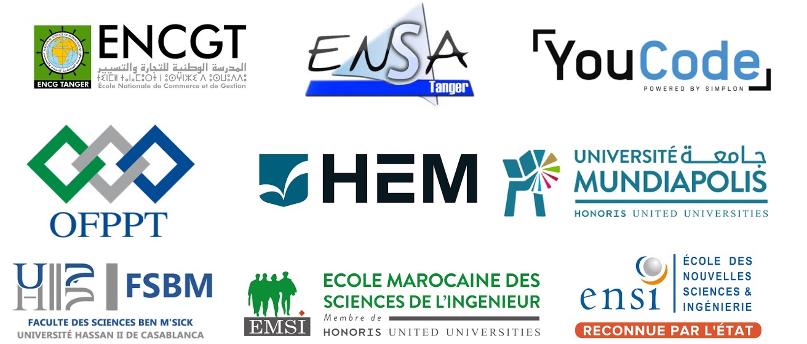
En 2025, le Technopark a intensifié ses programmes de montée en compétences pour accompagner les startups dans un marché de plus en plus compétitif et tourné vers l'international. L'objectif a été double : doter les fondateurs d'outils stratégiques pour le passage à l'échelle et renforcer l'agilité opérationnelle des équipes techniques et managériales. À travers une offre diversifiée de formations, workshops pratiques et conférences, le Technopark a consolidé son rôle de véritable accélérateur de savoir-faire, favorisant une culture de l'apprentissage continu au sein de son écosystème. Plus de 300 sessions ont été organisées sur l'ensemble du réseau.
Au-delà de ChatGPT : Boostez votre maîtrise de l'IA Générative · Dive into GenAI and Serverless Computing (AWS) · Spécialiser l'IA grâce au finetuning · Créer votre agent IA avec Microsoft Copilot Studio · ConnectAI : Startups & entreprises à la croisée de l'innovation · Blockchain outil stratégique · Cybersécurité : stratégie face aux cyberattaques · Cybersécurité & Ethical Women HACKER · Atelier Robotique (Loops) · VS Code Dev Day · SAP S4Hana · Tendances 2025 de l'IA · Optimisez votre visibilité SEO · Youth in Business IA Bootcamp (BERD)
SCALING UP MOROCCO · Take your product to the next level · Atelier Startup Agile · Design Thinking · Maîtriser le Design Thinking · La Théorie du changement · Legal Tech Entrepreneurship · Construire son marché de l'idéation au pré-seed · Roadmap for Fundraising · Comment se préparer à la levée de fonds · Raising Capital · Crowdfunding au Maroc · Masterclass Pitch Deck (Orange Digital Center) · Qualité & Innovation
Apports de la Loi de Finances 2025 pour les Startups et PMEs · Maîtriser les clés de l'éducation financière · Tableau de bord prospectif · Maîtriser sa trésorerie · Les fonctions support leviers de performance · Transformer pour grandir · L'expérience client · Marketing de contenu organique et viral · Personal Branding · Dominez l'Art de Convaincre · Marketing digital & réseaux sociaux · Propriété intellectuelle · Programme BERD · Session Nexia Fiducia · Programme Kawalis
L'art du Storytelling · Impact des soft skills · Gestion des émotions · From Shy to Shine · Women Coders : Actrices Clés de la Stratégie Digitale 2030 · Empowering Women in Tech · Les secrets de la Féminité · Creative Thinking au service des coopératives féminines · Upgrade Your CV · Public Speaking and Entrepreneurship
Les Rendez-vous Experts constituent un cycle d'ateliers organisés sous forme de webinaires, articulé autour de deux axes stratégiques — technologie et business — ayant connu en 2025 une montée en puissance significative, tant par la diversité des thématiques abordées que par le niveau d'engagement des participants à travers les six sites du réseau.
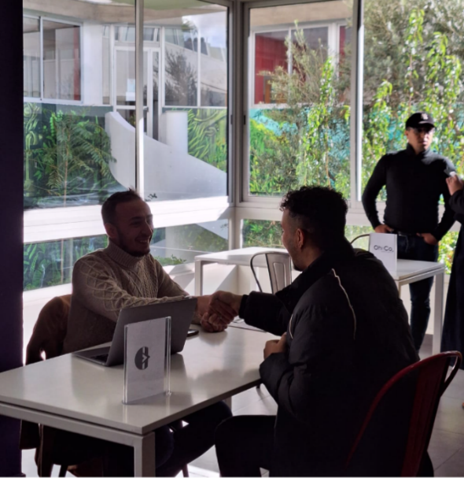
En 2025, la promotion des startups du Technopark s'est affirmée comme un levier stratégique pleinement intégré au modèle d'accompagnement. Elle ne relève plus d'une simple logique de communication institutionnelle, mais d'une architecture cohérente visant à transformer la visibilité en opportunités concrètes : accès au marché, crédibilité auprès des investisseurs, attraction de talents et positionnement à l'international.
Le Technopark déploie des efforts soutenus pour mettre en valeur les startups qu'il accompagne, en exploitant de manière optimale l'ensemble de ses canaux de communication. Les actions menées visent, d'une part, à promouvoir les solutions innovantes développées par ces startups et, d'autre part, à sensibiliser un public plus large à l'entrepreneuriat et à l'univers du numérique. Par ailleurs, ces initiatives participent au renforcement de l'image du Technopark en tant qu'acteur de référence dans l'accompagnement de l'entrepreneuriat et de l'innovation.
Lancée en 2024, l'initiative « 7KayTech » a perduré et s'est consolidée en 2025 comme un format emblématique de valorisation des entrepreneurs de l'écosystème. Son intitulé fait écho à l'expression marocaine « 7kaytek », qui signifie « raconte ton histoire », tout en intégrant la dimension Tech, en lien direct avec l'univers technologique des startups accompagnées et le rôle structurant du Technopark.
Le concept repose sur des formats d'échange ouverts et sincères, au cours desquels les fondateurs partagent les réalités de leur parcours entrepreneurial, les obstacles rencontrés ainsi que les apprentissages issus de leur développement. En favorisant la transmission d'expériences concrètes, « 7KayTech » encourage l'inspiration, le dialogue et le partage de connaissances au sein de la communauté startup.
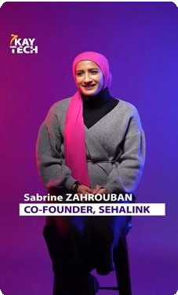
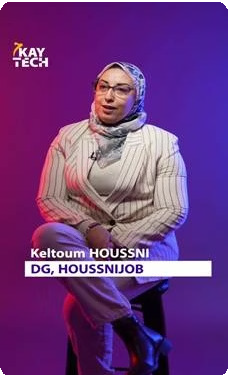
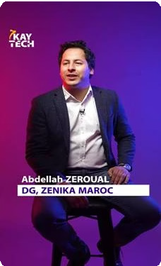
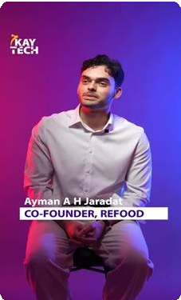
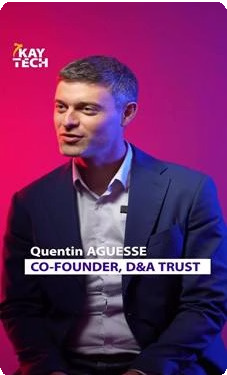
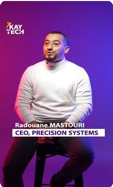
Dans le cadre d'un partenariat stratégique avec le magazine marocain TelQuel, une startup du réseau Technopark est mise à l'honneur chaque mois à travers un article dédié. Cette initiative s'inscrit dans une stratégie globale de promotion de l'innovation entrepreneuriale et permet aux startups bénéficiaires de gagner en notoriété, en valorisant leurs parcours et en rendant leurs solutions accessibles à un public élargi. Parmi les startups mises en lumière en 2025 :
| Startup | Titre de l'article |
|---|---|
| MLNetworks | L'IA marocaine qui séduit les géants des télécoms |
| MentorClass Academy | Le Netflix de la formation en Afrique |
| Click Doc | Transforme la gestion des cabinets médicaux avec l'IA et la téléconsultation |
| Alya Pay | Première fintech marocaine du paiement fractionné sans frais |
| Key Intelligent Technology | La robotique « made in Morocco » |
Au cours de l'année 2025, les startups accompagnées par le Technopark se sont distinguées à l'échelle nationale et internationale en remportant plusieurs prix et distinctions. Ces reconnaissances témoignent de la qualité des projets incubés, de leur capacité d'innovation et de leur impact dans des secteurs stratégiques. Elles illustrent également le rôle du Technopark comme catalyseur de talents entrepreneuriaux et comme acteur clé de la promotion de l'innovation et de l'excellence.
| Startup | Distinction | Contexte |
|---|---|---|
| MLNetworks | Outstanding Catalyst Rising Star Award | TM Forum, DTW Ignite — Copenhague |
| WISE SYSTEMS / AGRIWISE | Top 5 Moroccan Startups Award | GITEX Africa 2025 |
| From Sand to Green | 1er Prix Orange Social Venture Prize 2025 · Finaliste TV5 Monde « Les nouveaux Boss » | OSVP Afrique & Moyen-Orient · TV5 Monde |
| From Sand to Green | DTS Prize — Green Economy | DeepTech Summit UM6P |
| AZA Petrosolutions | Forbes Middle East Under 30 | Forbes ME Summit, El Gouna |
| Visioprocess / SmartGlobe | 2e prix national Orange POESAM | 15e édition POESAM |
| WashMinute | Grand Prix Greentech Roadshow (120 K MAD) | BMCI Groupe BNP Paribas |
| System & Data Driven | 2e prix Tech Talent 2025 | Digital Now / TechTalents |
| MDAAS / Admarkai | 3e prix Commerce TechTalents | Digital Now |
La startup From Sand to Green remportant le premier prix de l'Orange Social Venture Prize Afrique et Moyen-Orient 2025, illustrant la portée internationale des projets accompagnés par le Technopark.
Engagé dans une refonte globale de sa stratégie de communication, le Technopark a amorcé en 2025 un processus de transformation de son architecture digitale. Cette évolution vise à structurer une présence plus cohérente, plus territorialisée et davantage orientée vers l'impact. Dans cette dynamique, chaque site régional dispose progressivement de ses propres canaux sur les réseaux sociaux, permettant une valorisation ciblée des dynamiques locales, des startups accompagnées et des opportunités propres à chaque territoire.
Cette transformation s'appuie donc sur une articulation à deux niveaux, assurant à la fois cohérence stratégique et ancrage territorial.
La communication met en avant les annonces structurantes, les levées de fonds majeures, les distinctions internationales et la participation aux grands rendez-vous de l'innovation.
Elle valorise les initiatives de proximité, les réussites locales et les spécificités de chaque écosystème, renforçant la lisibilité de l'action du Technopark.
Cette complémentarité permet de renforcer la lisibilité de l'action du Technopark tout en amplifiant la visibilité des territoires et des startups accompagnées.
Par ailleurs, la ligne éditoriale engagée dans le cadre de cette refonte évolue vers une communication davantage centrée sur l'impact. Le Technopark valorise désormais prioritairement les résultats générés — trajectoires de croissance, succès entrepreneuriaux, distinctions et opportunités concrètes — renforçant ainsi son positionnement en tant qu'acteur structurant et générateur de valeur pour l'écosystème.
Ces résultats illustrent une évolution progressive vers un modèle où la communication digitale dépasse sa fonction de visibilité pour devenir un véritable levier d'attractivité, d'engagement et de rayonnement du Technopark et de l'innovation marocaine.
| Site | Entrées 2025 | dont early stage | Taux rotation | Taux satisfaction | Taux réussite |
|---|---|---|---|---|---|
| Casablanca | 74 | 53 | 36 % | 96 % | 96 % |
| Rabat | 19 | 12 | 56 % | 92 % | 91 % |
| Tanger | 25 | 19 | 43 % | 95 % | 100 % |
| Agadir (Souss Massa) | 23 | 15 | 34 % | 93 % | 100 % |
| Essaouira | 8 | 6 | 57 % | 100 % | 80 % |
Lancé en novembre 2023, le Technopark Essaouira a une capacité d'accueil de 60 startups. Doté d'un espace pour les Digital Nomads, il s'inscrit dans l'esprit d'Essaouira, ville créative et ouverte, prisée pour son patrimoine, son climat et son attractivité auprès des entrepreneurs et télétravailleurs du monde entier. 14 entreprises installées, superficie globale 2 350 m², plus de 6 500 visiteurs et 1 500 participants aux événements (cumulé 2024-2025).
Le Technopark de Casablanca a ouvert en 2001. Ce premier incubateur de startups représente la plus grande pépinière d'entreprises technologiques au Maroc. Depuis sa création, le Technopark de Casablanca a réussi à fédérer un écosystème d'acteurs clés dans l'accompagnement à l'entrepreneuriat et à l'innovation. Sa dynamique, son modèle agile et évolutif et sa performance lui ont valu un rayonnement national et international. Capitalisant sur le succès du Technopark Casablanca, MITC a dupliqué le modèle sur plusieurs régions.
Le Technopark de Rabat a été lancé en août 2012. Le bâtiment (ancien siège de Maroc PME) dispose d'une superficie globale de 2 000 m² et une capacité d'accueil de 35 entreprises. Il comprend une trentaine de locaux, une cafétéria, un espace de coworking et deux salles de réunion. Il a nécessité un investissement initial de 3 MDH comprenant le réaménagement et l'équipement. Le Technopark de Rabat a atteint un taux d'occupation de 100 % dès la première année.
En 2013, une opportunité s'est présentée au Technopark pour consolider sa stratégie de duplication régionale. Le bâtiment appartient à la direction des domaines de l'État qui l'a mis à disposition de MITC à titre gracieux pour une période de 10 ans. En contrepartie, MITC a procédé au réaménagement du bâtiment pour un budget de 20 MDH. Le Technopark Tanger est un véritable levier pour créer une dynamique entrepreneuriale dans la région du Nord. Son positionnement, la qualité de son infrastructure et ses services d'accompagnement constituent autant d'atouts pour la communauté des startups de la région. Le Technopark de Tanger pourra accueillir en rythme de croisière plus de 90 entreprises, si la totalité de sa superficie est mise à disposition de MITC.
Le Technopark Souss Massa est le fruit d'un partenariat entre le ministère de l'Intérieur, le ministère de l'Économie et des Finances, le ministère de l'Industrie, du Commerce et de l'Économie Verte et Numérique (MICEVN), le Conseil Régional Souss Massa et la Chambre de Commerce d'Industrie et de Services de Souss Massa (CCIS-SM). La CCIS-SM a mis à disposition un terrain d'une superficie de 2 000 m² dont la valeur est estimée à 5 MDH. Le Conseil régional a mobilisé une enveloppe budgétaire de 80 MDH pour le financement de la construction et l'aménagement du bâtiment. MITC, à travers le MICEVN, a pris en charge l'acquisition des équipements nécessaires pour assurer l'exploitation du Technopark Souss Massa (équipement des salles de formations, agora, cafétéria…).
Le Technopark Essaouira est le fruit d'un partenariat entre le Technopark, le Ministère de la Transition Numérique et de la Réforme de l'Administration (MTNRA), le Conseil Communal et le Conseil Provincial d'Essaouira. Lancé en novembre 2023, le Technopark Essaouira a une capacité d'accueil de 60 startups et porteurs de projets dans les secteurs des TICs, développement durable et Industries Culturelles et Créatives. Doté d'un espace pour les Digital Nomads, il s'inscrit dans l'esprit d'Essaouira, ville créative et ouverte, prisée pour son patrimoine, son climat et son attractivité auprès des entrepreneurs et télétravailleurs du monde entier. Partenaires institutionnels : le Conseil Provincial d'Essaouira, le Conseil Communal d'Essaouira et le Ministère de la Transition Numérique et de la Réforme de l'Administration.
La Cité de l'Innovation Souss Massa (CI-SM) s'inscrit dans le cadre du Plan d'Accélération Industrielle de la Région Souss Massa, lancé en janvier 2018. La gestion de la cité de l'innovation par une structure privée (MITC) est une première expérience au niveau national. Ce mode de gouvernance ainsi que la dynamique insufflée par MITC au niveau de la CI-SM suscite un grand intérêt de la part de structures similaires au niveau national et continental. La CI-SM propose un parcours d'accompagnement progressif, permettant à un projet issu de la recherche de se structurer, d'évoluer vers une startup, puis de se développer en entreprise avec un potentiel de passage à l'échelle.
La Cité de l'Innovation Souss-Massa (CI-SM) constitue aujourd'hui l'un des dispositifs les plus structurants de l'écosystème régional d'innovation, en matière de valorisation de la recherche appliquée, de transfert technologique et de soutien à l'émergence de projets innovants à fort impact territorial. Elle incarne un modèle inédit au Maroc : une cité d'innovation opérée par un acteur privé, Technopark Morocco, capable de connecter recherche scientifique, entrepreneuriat technologique innovant et développement économique régional.
En 2025, la CI-SM a organisé trois commissions régionales (15ème, 16ème et 17ème), totalisant 55 candidatures reçues, 17 dossiers examinés et 16 projets validés. Secteurs couverts : AgriTech (AGRILAB, FARMROAD, AGROBOTIQUE), GreenTech (VAP GREEN TECH, MACROTERRA), HealthTech (SINTROCARE), industrie du bois (ALMADERA), aquaculture (CAPTAIN SEA), élevage connecté (BOVICLOUDS, SMARTEGG), data et logistique (SITELLI CW, CALIPROS).
Sur les 16 projets validés, 6 ont abouti à une conversion effective vers l'incubateur (AGRILAB, SITELLI CW, FARMROAD, BOVICLOUDS, SINTROCARE, CALIPROS), 5 ont intégré la plateforme R&D et 1 a été orienté vers l'espace de pré-incubation. Le nombre de candidatures a triplé entre la commission de février (11) et celle d'octobre (34).
Ces indicateurs confirment la capacité de la CI-SM à attirer, structurer et accélérer des projets innovants à forte valeur ajoutée, tout en contribuant à l'émergence d'une nouvelle génération de startups deeptech et industrielles dans la région.
Au-delà de la connexion entre les mondes de la recherche, de l'expérimentation de l'innovation et de l'entrepreneuriat technologique, l'année 2025 confirme également la capacité de la Cité de l'Innovation Souss-Massa (CI-SM) à générer une innovation à forte valeur technologique et brevetable. Au total, huit brevets ont été déposés, obtenus ou sont en cours, dont deux brevets à portée internationale via le traité PCT, positionnant la CI-SM parmi les écosystèmes les plus dynamiques du Maroc en matière de propriété intellectuelle technologique.
Cette dynamique d'innovation et de valorisation technologique contribue à renforcer l'attractivité de la CI-SM, qui suscite un intérêt croissant au-delà des frontières nationales. En 2025, plusieurs délégations marocaines et internationales notamment de l'UM6P, de la Métropole Aix-Marseille-Provence, des Îles Canaries, de la Corée et de l'Italie ont effectué des visites d'immersion afin d'étudier ce modèle d'innovation territoriale intégrée. Ces échanges témoignent de l'intérêt croissant pour un dispositif capable de connecter recherche académique, innovation industrielle et entrepreneuriat technologique au sein d'un même écosystème.
Parallèlement, sa participation active aux grands événements technologiques et forums internationaux permet de valoriser l'écosystème marocain, de promouvoir ses startups et de capter de nouvelles opportunités d'investissement et d'export. Cette double dynamique, d'attractivité et de présence à l'international, consolide le rôle du Technopark comme vitrine du savoir-faire marocain et catalyseur de connexions globales.
En 2025, plusieurs délégations nationales et internationales ont effectué des visites d'immersion à la CI-SM : représentants de la Métropole Marseille-Aix-en-Provence, des Îles Canaries, de la Corée et de l'Italie. Toutes sont venues s'inspirer d'un modèle qu'elles envisagent de répliquer. Ces délégations, issues d'institutions marocaines et internationales notamment de l'UM6P, ont effectué des visites afin d'étudier ce modèle d'innovation territoriale intégrée, témoignant de l'intérêt croissant pour un dispositif capable de connecter recherche académique, innovation industrielle et entrepreneuriat technologique au sein d'un même écosystème.
L'année 2025 marque ainsi une étape structurante dans la consolidation de la CI-SM. Elle illustre la capacité d'un écosystème territorial à structurer un continuum d'innovation fluide, allant de la recherche scientifique à l'émergence de startups technologiques compétitives.
Afin de garantir un suivi régulier des projets Technoparks et s'assurer de la conformité des bâtiments aux standards établis, il a été institué un comité de suivi pour chaque projet. Ces comités sont constitués des équipes TECHNOPARK, des équipes de la Région/Commune concerné, de l'AREP et sont sous le contrôle et coordination du Wali de chaque Région.
Superficie totale : 8 000 m² · Capacité d'accueil : 80 startups et TPEs digitales + 40 positions coworking · Investissement global : 55 MDH (Région Fès-Meknès 50 MDH + MITC 5 MDH)
Réalisations 2025 : Préparation du Business Plan et de la convention spécifique (janvier 2025) · Présentation aux parties prenantes en présence du Wali de Fès Meknès (février 2025) · Tenue du comité de suivi (avril 2025) · Désignation d'un nouvel Architecte (HS PARTNER, juin 2025).
| Lots | Avancement Janv. 2025 | Avancement Déc. 2025 |
|---|---|---|
| Installations et gros œuvres | 43 % | 57 % |
| Finitions | 6 % | 18 % |
Éléments bloquants : Défaillances des prestataires · Besoin de fonds pour créer l'accès depuis la voie principale (estimé à 15 MDH) · Contraintes techniques relatives à la structure porteuse. Prochaines étapes : Achèvement des travaux prévu début 2027.
* Avancement estimé sur la base des observations faites sur chantier (Informations données à titre indicatif)
Superficie totale : 1 260 m² · Capacité : 23 startups + 11 positions coworking · Budget global : Travaux 5,5 MDH + Mobilier & équipements 1 MDH
Réalisations 2025 : Élaboration du BP et convention spécifique · Démarrage du chantier (juin 2025). Approbation de la convention spécifique au niveau du Conseil régional SM (octobre 2025) et Conseil communal de Tiznit (novembre 2025). Avancement : Gros œuvres 79 % / Finitions 18 %. Prochaines étapes : Achèvement T1-T2 2026, démarrage de l'activité T3 2026.
* Avancement estimé sur la base des observations faites sur chantier (Informations données à titre indicatif)
Le projet a été mis en stand-by en 2024. En janvier 2025, le Wali de l'Oriental a convoqué l'équipe Technopark afin d'envisager une alternative : un bâtiment appartenant à l'Université Mohamed 1er, au Campus du Savoir d'Oujda, à proximité de l'école de code 01 Talent, « La Maison de l'IA » annexe de l'université Mohamed 1er, un centre de prototypage, le centre OFPPT et la zone industrielle.
Réalisations 2025 : Élaboration par l'équipe Technopark Morocco du nouveau plan d'aménagement, du budget d'investissement et du Business Plan. Éléments bloquants : Non-alignement sur le Business Model proposé par le Technopark · Risque relatif à l'accessibilité au site proposé (placé à 10 km du centre-ville d'Oujda) · Changement du Wali en novembre 2025 · Lenteur des feedbacks. Prochaines étapes : Demander une réunion avec le nouveau Wali suite au changement de novembre 2025.
Khémisset : Appel d'offres et désignation de l'entreprise des travaux (mars 2025), lancement des travaux. Sidi Kacem, Sidi Slimane et Témara : Consultation pour levée topographique (mars 2025) et pour mission d'études architecturales (octobre 2025).
Depuis sa création, Technopark Morocco a su développer et consolider un réseau de partenariats stratégiques avec des acteurs clés de l'entrepreneuriat et de l'innovation. Au fil de plus de deux décennies, un véritable écosystème dynamique et collaboratif s'est structuré autour des startups, contribuant à positionner le Technopark comme un catalyseur majeur de l'innovation et de l'entrepreneuriat technologique au Maroc.
À travers ses différents sites régionaux, le Technopark a progressivement fédéré un large éventail d'acteurs structurants de l'écosystème : associations professionnelles, universités, centres de recherche, accélérateurs, investisseurs, institutions publiques et incubateurs. Ces partenariats constituent un levier essentiel pour soutenir la création, la croissance et la pérennisation des projets innovants, en apportant aux startups un accompagnement à la fois financier, technique et opérationnel.
Dans le cadre de sa nouvelle stratégie de développement, Technopark Morocco poursuit le renforcement et l'élargissement de son offre d'accompagnement afin de la rendre plus intégrée, plus inclusive et davantage connectée aux écosystèmes internationaux. Cette dynamique vise à offrir aux startups marocaines un accès élargi aux meilleures pratiques en matière d'innovation, de financement et de développement de marchés, tout en consolidant le rôle du Technopark comme plateforme de référence pour l'émergence et la croissance des entreprises technologiques au Maroc.
Plusieurs partenariats ont été mobilisés afin de faciliter l'accès des startups aux investisseurs et aux dispositifs de financement. Parmi les initiatives majeures, le Hackathon Open Data, organisé avec l'Agence de Développement du Digital (ADD), a permis d'explorer de nouveaux usages des données ouvertes. Dans la même dynamique, le Hackathon Open Innovation, organisé avec Royal Air Maroc et l'ADD, a été déployé sous forme de roadshow sur plusieurs sites du Technopark, réunissant près de 100 participants autour des enjeux d'innovation dans les secteurs du transport aérien et du tourisme. Le Roadshow GITEX Africa, organisé avec l'ADD, a mobilisé 120 participants, préparant les startups à tirer parti des opportunités de cet événement technologique international. Par ailleurs, plusieurs sessions de pitch ont été organisées avec des acteurs du venture capital tels que Renew Capital, First Circle Capital, Endeavor et MNF Ventures.
En 2025, le Technopark a significativement élargi son réseau de partenaires, en signant de nouveaux accords avec des acteurs publics, privés, académiques et associatifs à l'échelle nationale et régionale.
| Partenaire | Objet du partenariat |
|---|---|
| CGEM | Accès au programme CGEM Tech Founders · Opportunités de financement, réseautage et mise en relation avec des acteurs économiques clés |
| ADD (Agence du Développement du Digital) | Accès aux programmes nationaux d'innovation · Promotion du statut Jeune Entreprise Innovante (JEI) · Carte de paiement internationale dédiée |
| MTNRA / Tamwilcom — SVB | Opérateur national SVB · Accompagnement intensif combinant mentorat stratégique, renforcement des capacités et accès au financement |
| APEBI | Passerelles entre startups et PME technologiques · Networking, formation, accès au marché et à l'export |
| Fondation CIH | Tables rondes et workshops sur l'entrepreneuriat féminin, l'inclusion financière et l'innovation |
| Concentrix Maroc | Accès au CX Tek Lab (IA et data) · Innovation intrapreneuriale au sein de l'écosystème Technopark |
| Fondation Marocaine pour l'Éducation pour l'Emploi | Programmes de formation (soft skills, développement transversal) · Antennes au Technopark Casablanca et Essaouira |
| ANAPEC | Employabilité des talents tech · Recrutement et dispositifs publics d'emploi |
| ALX Morocco | Accès à des profils certifiés · Job Days bimensuels, Job Fairs annuelles, sessions « Find your co-founder » |
| 3WA | Accès à des développeurs qualifiés · Identification de projets innovants issus de la communauté 3WA |
| GOMYCODE | Formation aux métiers du numérique · Incubation de projets innovants · Accès à l'emploi pour les talents formés |
| Azur Innovation Management | Accès à l'investissement, au mentorat et aux programmes de renforcement des capacités · Accompagnement post-investissement |
| Morocco's 40 Under 40 | Valorisation de la diaspora marocaine · Mentorat, formations avancées et mise en réseau avec des profils à forte valeur ajoutée |
Dans le cadre de sa stratégie de facilitation de l'accès aux infrastructures technologiques, le Technopark a consolidé ses partenariats avec des acteurs de référence afin de rapprocher les startups des solutions numériques adaptées à leurs besoins de développement.
En collaboration avec Orange Maroc, une session dédiée à la présentation des offres Cloud a été organisée, réunissant une quarantaine de participants. Cette initiative a permis aux startups de mieux appréhender les solutions disponibles pour soutenir leur croissance et optimiser leurs infrastructures numériques.
Le Technopark a accueilli l'Oracle R&D Center Morocco dans le cadre d'un Immersion Day dédié aux startups, offrant un accès direct aux équipes d'ingénierie d'Oracle ainsi qu'à des technologies avancées : Autonomous AI Database, APEX, OCI et Oracle Analytics.
Le partenariat avec l'Université Mohammed VI Polytechnique (UM6P) a également permis l'organisation du Roadshow The Forge, mobilisant 36 participants autour des opportunités d'accompagnement et d'investissement. Enfin, le lancement du Morocco Fintech Accelerator, porté par Morocco Fintech Center et l'UM6P, a contribué à structurer un dispositif d'accompagnement dédié aux startups fintech, réunissant plus de 100 participants.
Plusieurs initiatives ont également permis de renforcer les interactions entre startups, entrepreneurs et acteurs économiques. Le programme « Entreprendre jeune : le pouvoir de créer demain », porté par EPIK Leaders, a mobilisé plus de 110 participants autour de conférences dédiées à l'entrepreneuriat.
D'autres événements de networking ont été organisés avec des organisations et institutions telles que APEBI, ANRT, CIMR, Cluster Logipole Souss-Massa, CIH Bank et Boosthub, contribuant à renforcer l'intégration des startups dans l'écosystème économique national.
En 2025, le Technopark a continué de renforcer sa position en tant qu'acteur majeur de l'écosystème entrepreneurial marocain en accueillant plus de 30 délégations, dont plusieurs institutions internationales de premier plan. Ces visites illustrent l'intérêt croissant porté au modèle Technopark et mettent en lumière son rôle dans la promotion et la valorisation de l'écosystème entrepreneurial national, tout en contribuant à son rayonnement à l'échelle internationale.
| Site Technopark | Délégation | Organisme visiteur | Objet de la visite |
|---|---|---|---|
| Technopark Casablanca | Visite de la délégation tunisienne | Délégation tunisienne, Union pour la Méditerranée (UpM), MedWaves | Présentation de l'écosystème Technopark, mise en lumière de l'entrepreneuriat féminin, découverte de startups Greentech et exploration d'opportunités de coopération régionale. |
| Technopark Casablanca | Visite de la délégation canadienne | Ambassade du Canada au Maroc, Affaires Mondiales Canada | Discussions exploratoires visant à identifier des opportunités de partenariat stratégique avec l'écosystème Technopark. |
| Technopark Casablanca | Visite de la délégation des Émirats Arabes Unis | Dubai Chambers — Dubai Global | Présentation de l'écosystème des startups marocaines et exploration d'opportunités de collaboration avec les acteurs économiques des Émirats Arabes Unis. |
| Technopark Casablanca | Visite de la délégation irlandaise | Conseil du comté de Dun Laoghaire-Rathdown, Sandyford Business District | Présentation de l'écosystème startup marocain et exploration de partenariats dans les smart cities, les nouvelles technologies et les solutions de géolocalisation. |
| Technopark Casablanca | Visite de la délégation malgache | Délégation institutionnelle de Madagascar | Découverte du modèle Technopark et échanges autour de la structuration d'écosystèmes d'innovation. |
| Technopark Casablanca | Visite de la délégation du Cap-Vert | Délégation institutionnelle du Cap-Vert | Découverte de l'écosystème Technopark et exploration d'opportunités de coopération en matière d'innovation. |
| Technopark Casablanca | Visite de l'association Action Allies United | Action Allies United — UN Women | Découverte de l'écosystème entrepreneurial technologique marocain avec un focus sur l'engagement des femmes et des jeunes filles dans la tech. |
| Technopark Casablanca | Visite de la délégation CCEF Nouvelle-Aquitaine | Conseillers du Commerce Extérieur de la France (CCEF) | Renforcement des synergies entre les écosystèmes économiques marocain et français. |
| Technopark Casablanca | Visite de la délégation La Mêlée et AUSIM | La Mêlée (Occitanie), AUSIM | Rapprochement des écosystèmes startup du Maroc et de la région Occitanie afin de favoriser les collaborations technologiques. |
| Technopark Casablanca | Visite de la délégation Medeniyet Teknopark Istanbul | IMU Medeniyet Teknopark Istanbul | Exploration d'opportunités de coopération internationale en matière de R&D, innovation et internationalisation des startups. |
| Technopark Casablanca | Visite du cabinet de conseil londonien Envestors | Cabinet Envestors | Présentation des dispositifs d'accompagnement à l'internationalisation et des opportunités d'incorporation d'entreprises au Royaume-Uni. |
| Technopark Casablanca | École inclusive Kout Que Kout by KEOS | Kout Que Kout by KEOS | Visite d'immersion d'étudiants en business et innovation pour découvrir l'écosystème entrepreneurial et les startups du Technopark. |
Parmi les délégations reçues au Technopark Casablanca : Ambassade du Canada au Maroc — Discussions exploratoires visant à identifier des opportunités de partenariat stratégique avec l'écosystème Technopark. Dubai Chambers Dubai Global — Présentation de l'écosystème des startups marocaines et exploration d'opportunités de collaboration avec les acteurs économiques des Émirats Arabes Unis. Conseil du comté de Dun Laoghaire-Rathdown, Sandyford Business District — Présentation de l'écosystème startup marocain et exploration de partenariats smart cities. Délégation institutionnelle de Madagascar — Découverte du modèle Technopark et échanges autour de la structuration d'écosystèmes d'innovation. Délégation institutionnelle du Cap-Vert — Découverte de l'écosystème Technopark et exploration d'opportunités de coopération en matière d'innovation. Action Allies United (UN Women) — Découverte de l'écosystème entrepreneurial technologique marocain, focus engagement des femmes et des jeunes filles dans la tech. Conseillers du Commerce Extérieur de la France (CCEF) Nouvelle-Aquitaine — Renforcement des synergies entre les écosystèmes économiques marocain et français. La Mêlée (Occitanie) et AUSIM — Rapprochement des écosystèmes startup du Maroc et de la région Occitanie pour favoriser les collaborations technologiques. IMU Medeniyet Teknopark Istanbul — Exploration d'opportunités de coopération internationale en matière de R&D, innovation et internationalisation des startups. Cabinet Envestors — Présentation des dispositifs d'accompagnement à l'internationalisation et des opportunités d'incorporation d'entreprises au Royaume-Uni.
| Site Technopark | Délégation | Organisme / partenaire visiteur | Objet de la visite |
|---|---|---|---|
| Cité de l'Innovation Souss Massa (CI-SM) | Visite de la délégation ITA (Italian Trade Agency) | Italian Trade Agency | Discussions autour du programme LAB INNOVA et exploration d'opportunités de collaboration en matière d'innovation. |
| Cité de l'Innovation Souss Massa (CI-SM) | Visite de la délégation des Îles Canaries | Gouvernement des Îles Canaries | Rencontres institutionnelles et signature de partenariats dans la région Souss Massa. |
| Cité de l'Innovation Souss Massa (CI-SM) | Visite de la délégation coréenne | Korea University | Visite d'experts en éducation dans le cadre d'un projet d'appui à l'innovation et à l'information pédagogique. |
| Technopark Souss Massa (Site Agadir) | Visite de la délégation de l'USAID | USAID | Découverte de l'écosystème entrepreneurial de la région Souss Massa. |
| Technopark Souss Massa (Site Agadir) | Visite de la délégation d'étudiants de l'Université de Lorraine | Université de Lorraine | Découverte de l'écosystème entrepreneurial de la région Souss Massa et immersion dans l'environnement startup. |
| Technopark Tanger | Visite de la délégation Hong Kong Trade Development Council | Hong Kong Trade Development Council | Échanges sur la position du Maroc dans le paysage technologique africain, les opportunités d'exportation vers l'Asie et les programmes de soft-landing pour startups. |
| Technopark Tanger | Visite de la délégation Tech Park Malaga | Tech Park Malaga | Découverte du Technopark Tanger et exploration d'axes de collaboration entre les deux écosystèmes. |
| Technopark Tanger | Visite de la délégation Aspen Institute | Aspen Institute | Découverte de l'écosystème Technopark, rencontres avec des startups et échanges sur les dispositifs d'incubation au Maroc. |
| Tanger | Valencia Park | Découverte de l'écosystème technologique marocain et exploration d'opportunités de partenariats en matière d'innovation | |
| Casablanca | Action Allies United (UN Women) | Découverte de l'écosystème entrepreneurial technologique marocain avec focus sur l'engagement des femmes et des jeunes filles dans la tech | |
| Casablanca | Délégation CCEF Nouvelle-Aquitaine | Renforcement des synergies entre les écosystèmes économiques marocain et français | |
| Casablanca | Délégation La Mêlée (Occitanie) et AUSIM | Rapprochement des écosystèmes startup du Maroc et de la région Occitanie pour favoriser les collaborations technologiques | |
| CI-SM | Cosmetic Valley | Découverte de l'écosystème d'innovation de la région Souss Massa et identification d'opportunités de collaboration | |
| Agadir | Délégation étudiants Université de Lorraine | Découverte de l'écosystème entrepreneurial de la région Souss Massa et immersion dans l'environnement startup |
En 2025, le Technopark a pris part à plusieurs événements majeurs de l'innovation et de la tech à l'échelle internationale, affirmant ainsi sa présence institutionnelle au sein des grands rendez-vous du numérique.
Le Technopark Morocco a pris part à la 42e Conférence mondiale de l'IASP (380 Membres de 75 pays) à Pékin. À cette occasion, la Directrice Générale est intervenue pour mettre en lumière la dynamique de croissance des startups accompagnées, marquée par une montée en maturité technologique et une capacité accrue à se positionner sur les marchés internationaux. Fait marquant : la Directrice Générale a été nommée Présidente du Conseil Consultatif par le nouveau Board exécutif de l'IASP, consacrant ainsi le rôle croissant du Technopark dans la gouvernance internationale des écosystèmes d'innovation et renforçant la visibilité du Maroc au sein de cette communauté internationale.
Membre actif de l'IASP (380 Membres de 75 pays), le Technopark confirme, à travers cette participation, son positionnement en tant qu'acteur engagé dans les dynamiques internationales de l'innovation, contribuant aux réflexions stratégiques et au partage de bonnes pratiques à l'échelle mondiale.
Dans une dynamique d'ouverture à l'international, le Technopark, aux côtés de la Cité de l'Innovation Souss Massa, a participé à l'« Innovation Fair 2025 », tenue à Bruxelles en octobre 2025. Organisé avec le soutien de la Commission européenne, de l'Union africaine et du ministère de l'Enseignement Supérieur et de l'Innovation, cet événement est dédié à la coopération Afrique–Europe en matière d'innovation. Cette participation a permis de valoriser le modèle de la Cité de l'Innovation Souss Massa et d'engager des échanges à fort potentiel avec des partenaires européens, ouvrant des perspectives concrètes de collaboration en incubation, recherche et financement, et renforçant ainsi son rayonnement à l'échelle euro-africaine.
En 2025, la Directrice Générale du Technopark Morocco a pris part à l'IASP WANA Division Event organisé à Riyad par la King Abdulaziz City for Science and Technology (KACST), un rendez‑vous majeur réunissant les leaders de l'innovation de la région Moyen‑Orient et Afrique du Nord. Placé sous la thématique « Innovation Ecosystems for Economic Impact », l'événement a exploré le rôle des écosystèmes technologiques dans l'impulsion d'une croissance économique durable et dans l'émergence de solutions innovantes à l'échelle régionale. La participation du Technopark a permis de mettre en avant l'expertise marocaine en matière d'innovation, de renforcer les échanges avec les membres de l'IASP WANA Division, et d'affirmer la contribution du Maroc au développement d'écosystèmes technologiques intégrés et collaboratifs.
Le Technopark Morocco a pris part à Emerging Valley 2025, sommet euro-africain de référence dédié à l'innovation, tenu en novembre 2025 à Marseille sous le Haut Patronage du Président de la République française. Réunissant plus de 1 300 participants issus de 70 pays, cet événement s'est imposé comme une plateforme stratégique de dialogue entre l'Afrique et l'Europe. Au cœur des échanges, cette édition a mis en avant des thématiques structurantes telles que les financements innovants, l'intelligence artificielle inclusive, le soft-landing international et le renforcement des coopérations méditerranéennes, confirmant le rôle du sommet dans la structuration des dynamiques d'innovation euro-africaines.
Au-delà de son rôle d'accélérateur de startups, le Technopark s'affirme comme une véritable communauté apprenante, inclusive et engagée. Lieu de vie autant que lieu d'innovation, il cultive un esprit d'entraide et de proximité qui favorise les échanges, la collaboration et l'émergence d'initiatives porteuses de sens.
Tout au long de l'année 2025, cette dynamique communautaire s'est traduite par des programmes dédiés à l'inclusion numérique, à l'entrepreneuriat féminin, à l'engagement citoyen, à la culture et au bien-être collectif. Fédérant startups, associations, partenaires et acteurs de l'innovation autour de projets collaboratifs et solidaires, le Technopark renforce son identité de plateforme d'innovation ouverte, conviviale et profondément ancrée dans sa mission sociétale.
À l'occasion de la 15ᵉ édition de la Journée Internationale des Droits des Femmes, le Technopark a déployé, tout au long du mois de mars, un programme d'actions structuré et fédérateur, s'étalant sur une quinzaine de jours.
Cette initiative a donné lieu à une programmation riche et diversifiée — conférences-débats, workshops, stands d'exposition, marchés solidaires, ainsi que des activités artistiques et culturelles — mobilisant l'ensemble de l'écosystème autour d'un objectif commun : valoriser l'entrepreneuriat féminin, renforcer la visibilité des femmes porteuses de projets et favoriser leur inclusion active dans l'économie numérique.
Au-delà de la dimension événementielle, cette démarche s'inscrit pleinement dans la stratégie du Technopark visant à promouvoir un écosystème plus inclusif et équitable. Elle contribue à connecter les jeunes filles et femmes entrepreneures aux opportunités offertes par le digital, à renforcer leurs capacités entrepreneuriales et à encourager leur positionnement sur des secteurs à fort potentiel, notamment les technologies innovantes, participant ainsi à une transformation économique durable et inclusive.
Conférences-débats inspirantes
Workshops de renforcement des capacités
Stands d'exposition de startups féminines
Marchés solidaires
Activités artistiques et culturelles
Connecter les jeunes filles et femmes entrepreneures aux opportunités offertes par le digital.
Renforcer les capacités entrepreneuriales féminines.
Encourager leur positionnement sur des secteurs à fort potentiel, notamment les technologies innovantes.
Dans le cadre de son engagement en faveur de la démocratisation du numérique et de l'ouverture de l'innovation au grand public, le Technopark déploie des initiatives pédagogiques visant à familiariser les jeunes générations avec les technologies émergentes. À travers des formats interactifs et accessibles, ces actions contribuent à éveiller l'intérêt des enfants pour le digital, tout en stimulant leur créativité, leur capacité d'apprentissage et leur esprit collaboratif.
À titre illustratif, le Technopark Casablanca a organisé, en partenariat avec l'Association LOOP, un atelier immersif intitulé « Fabrique ton robot : de l'idée à la réalité ». Cette session a permis aux participants de découvrir, de manière ludique et pratique, les bases du coding et de la robotique, en explorant les différentes étapes de conception, d'assemblage et de programmation.
À l'occasion d'Octobre Rose 2025, le Technopark s'est mobilisé pour la sensibilisation au cancer du sein à travers une campagne menée avec l'Association Dar Zhor, visant à promouvoir le dépistage précoce auprès de son écosystème et du grand public. Une journée de sensibilisation a été organisée autour d'un stand d'information animé par l'association, offrant un espace d'échange, de partage de supports pédagogiques et de témoignages.
Cette mobilisation s'est prolongée par l'organisation d'une course et marche solidaire à Casablanca, fédérant la communauté autour d'une initiative alliant engagement citoyen, solidarité et sensibilisation à la santé des femmes.
Dans le cadre de son partenariat avec Visa — sponsor officiel de la Coupe d'Afrique des Nations Maroc 2025 — le Technopark a accueilli à Casablanca l'exposition officielle du trophée de la CAN, offrant à sa communauté un moment fédérateur mêlant innovation, culture et passion du football africain.
En parallèle, trente enfants issus de la communauté du Technopark ont vécu une expérience immersive unique à l'occasion de trois matchs à Casablanca-Tanger-Agadir, en participant à la cérémonie officielle des hymnes nationaux aux côtés des joueurs africains. Portée en coordination avec Visa et la CAF, cette action illustre la capacité du Technopark à créer des passerelles entre son écosystème et des initiatives à fort impact.
Dans une démarche visant à renforcer l'engagement communautaire et à encourager le partage des savoirs, le Technopark a lancé l'initiative Techno-Read, un espace dédié à la lecture au sein de son écosystème.
Lancée en mai 2025, cette initiative s'appuie sur un fonds documentaire offert par l'association Book Friend, partenaire de l'événement. Au-delà de la mise à disposition d'ouvrages, ce projet vise à promouvoir la lecture comme vecteur de créativité et d'échange au sein de la communauté Technopark. L'initiative s'est également accompagnée d'ateliers d'expression : slam, écriture et lecture permettant aux membres de la communauté d'explorer leur créativité et de partager leurs idées dans un cadre convivial et collaboratif.
L'initiative Techno-Read illustre la vision du Technopark d'un écosystème d'innovation où le savoir, la culture et la créativité se nourrissent mutuellement, au service d'une communauté entrepreneuriale épanouie et connectée.
Le Technopark accorde une place importante à la culture, considérée comme un levier essentiel d'épanouissement personnel et de créativité pour les entrepreneurs. En favorisant l'accès à des initiatives culturelles variées — expositions artistiques, performances musicales, conférences et rencontres interculturelles — le Technopark contribue à enrichir la vie de sa communauté et à encourager l'ouverture, la diversité et l'expression créative.
Dans cette dynamique, le Technopark accueille également des acteurs culturels engagés, à l'image de l'association EAC L'Boulevart à Casablanca, qui participe activement à l'animation culturelle de l'écosystème.
L'année 2025 marque une étape décisive dans le déploiement de la feuille de route stratégique du Technopark Morocco. Les réalisations accomplies témoignent d'une montée en puissance cohérente et structurée, portée par des initiatives phares à impact national et international.
Ces résultats confirment le rôle structurant du Technopark comme catalyseur de l'innovation, opérateur de référence de l'accompagnement entrepreneurial et acteur engagé dans le développement inclusif et durable du Maroc numérique.